Eosinophils and your kidneysAng eosinophils at ang iyong mga batoAng eosinophils ug ang imong mga kidneyDing eosinophils at ding batu mu
"Your eosinophils are high, and your kidney test is up." This page explains, in plain words, what that pair of results can mean, which tests and treatments to expect, and the safety steps that matter most — especially if you grew up in the Philippines or another tropical country."Mataas ang iyong eosinophils, at tumaas ang iyong kidney test." Ipinapaliwanag ng pahinang ito, sa simpleng salita, kung ano ang maaaring ibig sabihin ng dalawang resultang ito, anong mga test at gamutan ang aasahan, at ang mga hakbang pangkaligtasan na pinakamahalaga — lalo na kung lumaki ka sa Pilipinas o sa ibang tropikal na bansa."Taas ang imong eosinophils, ug misaka ang imong kidney test." Kini nga panid nagpatin-aw, sa yanong pulong, kung unsa ang mahimong buot ipasabot niining duha ka resulta, unsang mga test ug pagtambal ang paabuton, ug ang mga lakang alang sa kaluwasan nga labing importante — ilabi na kung nagdako ka sa Pilipinas o sa laing tropikal nga nasod."Matas ing eosinophils mu, at mekatas ing kidney test mu." Ipaliwanag na ning bulung a iti, king simpling amanu, nung nanu ing buri nang sabyan ding adwang resulta a reti, nanung test at panulu ing panayan, at ding safety steps a pekamaulaga — lalu na nung mekamaragul ka king Pilipinas o king aliwang tropikal a bansa.
Eosinophils are a type of white blood cell. Their normal jobs are fighting parasites (worms) and taking part in allergic reactions. A routine complete blood count shows them as a percentage; your doctor turns that into a true number called the absolute eosinophil count (AEC). A count above about 500 cells per microliter is called high.Ang eosinophils ay isang uri ng white blood cell. Ang karaniwan nilang trabaho ay labanan ang mga parasito (bulate) at makilahok sa mga allergic reaction. Sa karaniwang complete blood count, lumalabas sila bilang porsiyento; ginagawa itong tunay na bilang ng iyong doktor, na tinatawag na absolute eosinophil count (AEC). Itinuturing na mataas ang bilang na higit sa mga 500 cells kada microliter.Ang eosinophils usa ka matang sa white blood cell. Ang ilang naandan nga trabaho mao ang pagpakig-away sa mga parasito (ulod) ug pag-apil sa mga allergic reaction. Sa naandan nga complete blood count, makita sila isip porsiyento; himoon kini sa imong doktor nga tinuod nga ihap nga gitawag og absolute eosinophil count (AEC). Ang ihap nga labaw sa mga 500 ka cells matag microliter giisip nga taas.Ing eosinophils metung yang klasing white blood cell. Ing karaniwan dang obra iyang lumaban kareng parasitu (bulati) at makibage kareng allergic reaction. King karaniwan a complete blood count, lumwal la bilang porsiyentu; gawan neng tutung bilang ning doktor mu, a maki lagyung absolute eosinophil count (AEC). Ibilang yang matas ing bilang a lagpas king mga 500 cells kada microliter.
Here is the part that surprises most people: only a small share of your eosinophils is in the blood. Most live in tissues such as the gut, lungs, skin, and kidneys. A blood test sees only the tip of the iceberg, and a single dose of a steroid medicine can make the blood count look normal within hours while the problem in the tissue continues.Ito ang bahaging ikinagugulat ng karamihan: maliit na bahagi lamang ng iyong eosinophils ang nasa dugo. Karamihan ay nasa mga tissue gaya ng bituka, baga, balat, at bato. Ang blood test ay nakikita lamang ang dulo ng iceberg, at ang isang dosis ng steroid na gamot ay maaaring magpamukhang normal sa bilang sa dugo sa loob ng ilang oras habang nagpapatuloy ang problema sa tissue.Kini ang bahin nga makapatingala sa kadaghanan: gamay ra nga bahin sa imong eosinophils ang naa sa dugo. Ang kadaghanan anaa sa mga tissue sama sa tinai, baga, panit, ug kidney. Ang blood test makakita lamang sa tumoy sa iceberg, ug ang usa ka dosis sa steroid nga tambal makapahimo nga normal tan-awon ang ihap sa dugo sulod sa pipila ka oras samtang nagpadayon ang problema sa tissue.Iti ing bage a ikagulat da ding dakal: dikit a bage mu ning eosinophils mu ing atyu king daya. Ding dakal atyu la kareng tissue antimo king bituka, baga, balat, at batu. Ing blood test ing ikit na mu ing dulu ning iceberg, at ing metung a dosis ning steroid a gamut malyari nang pakitan a normal ing bilang king daya king lub ning mangilang oras kabang tutuluy ya ing problema king tissue.
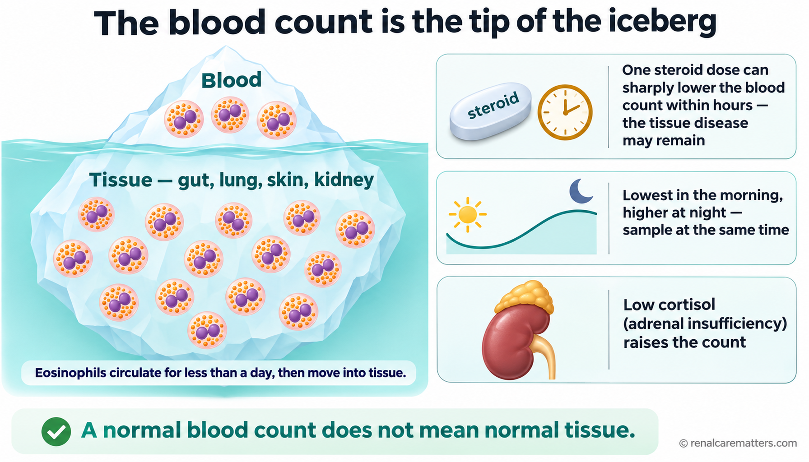
Most eosinophils live in tissue, not blood. A steroid dose, the time of day, and the body's own stress hormones all change the blood count without changing what is happening underneath.Karamihan sa eosinophils ay nasa tissue, hindi sa dugo. Ang dosis ng steroid, ang oras ng araw, at ang sariling stress hormones ng katawan ay nagbabago sa bilang sa dugo nang hindi binabago ang nangyayari sa ilalim.Ang kadaghanan sa eosinophils anaa sa tissue, dili sa dugo. Ang dosis sa steroid, ang oras sa adlaw, ug ang kaugalingong stress hormones sa lawas mag-usab sa ihap sa dugo nga dili mausab ang nahitabo sa ilalom.Ding dakal a eosinophils atyu la king tissue, ali king daya. Ing dosis ning steroid, ing oras ning aldo, at ding sariling stress hormones ning katawan pibabagu de ing bilang king daya a ali pibabagu ing malyari king lalam.
One number, three possible meaningsIsang numero, tatlong posibleng kahuluganUsa ka numero, tulo ka posibleng kahuloganMetung a numeru, atlung malyaring kahulugan
When eosinophils are high and the kidneys are not working well, the eosinophils can be playing one of three roles. Your doctor cannot tell which from the number alone — your urine test and your history give the answer.Kapag mataas ang eosinophils at hindi maayos ang paggana ng mga bato, maaaring may isa sa tatlong papel ang eosinophils. Hindi masasabi ng iyong doktor kung alin mula sa numero lamang — ang iyong urine test at ang iyong kasaysayan ang nagbibigay ng sagot.Kung taas ang eosinophils ug dili maayo ang paglihok sa mga kidney, ang eosinophils mahimong adunay usa sa tulo ka papel. Dili masulti sa imong doktor kung hain gikan sa numero lamang — ang imong urine test ug ang imong kasaysayan ang mohatag sa tubag.Nung matas ing eosinophils at e mayap ing pamagobra da reng batu, malyaring atin lang metung kareng atlung papel. E abalu ning doktor mu nung nanu kaniti king numeru mu — ing urine test mu at ing kasaysayan mu ing mamye sagut.
- A bystander — the cells are reacting to something else, such as a medicine, a parasite, or parts of a dialysis machine.Tagamasid lamang — tumutugon ang mga cell sa ibang bagay, gaya ng gamot, parasito, o mga bahagi ng dialysis machine.Tigtan-aw lamang — ang mga cell nagtubag sa laing butang, sama sa tambal, parasito, o mga bahin sa dialysis machine.Bystander mu — sasagut la ding cell king aliwang bage, antimo king gamut, parasitu, o bage ning dialysis machine.
- A marker — the cells are a sign of a body-wide disease that is also hurting the kidneys.Palatandaan — senyales ang mga cell ng sakit sa buong katawan na nakapipinsala rin sa mga bato.Timaan — ang mga cell timaan sa sakit sa tibuok lawas nga nakadaot usab sa mga kidney.Marker (tanda) — tanda la ding cell ning sakit king sablang katawan a manyirang muna kareng batu.
- A culprit — the cells themselves are injuring kidney tissue.Salarin — ang mga cell mismo ang pumipinsala sa tissue ng bato.Hinungdan — ang mga cell mismo ang nagdaot sa tissue sa kidney.Culprit (salarin) — ding cell mismu ing manyirang king tissue ning batu.
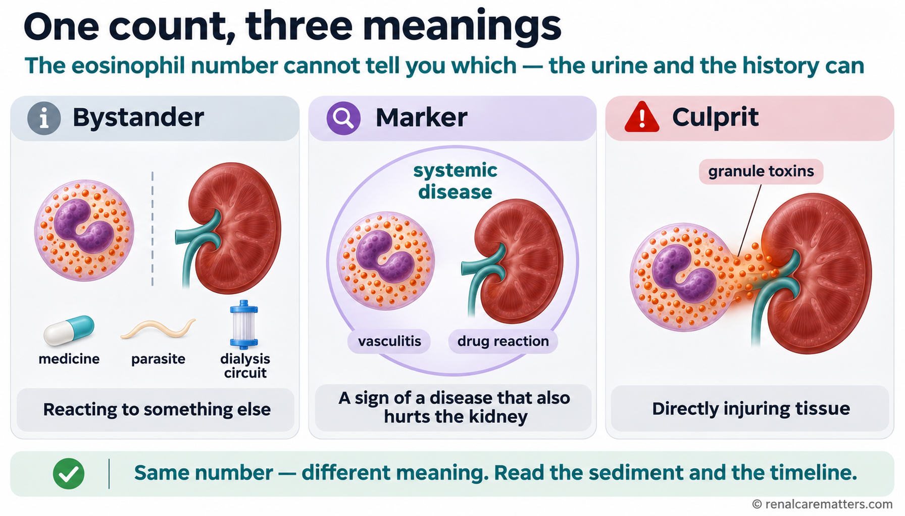
The same eosinophil count can mean three different things. The urine and your history tell your doctor which.Ang parehong bilang ng eosinophils ay maaaring may tatlong magkakaibang kahulugan. Ang ihi at ang iyong kasaysayan ang nagsasabi sa iyong doktor kung alin.Ang parehas nga ihap sa eosinophils mahimong adunay tulo ka lainlaing kahulogan. Ang ihi ug ang imong kasaysayan ang mosulti sa imong doktor kung hain.Ing pareung bilang ning eosinophils malyaring atin yang atlung magkakaibang kahulugan. Ing atsing at ing kasaysayan mu ing mamagsabi king doktor mu nung nanu kaniti.
What usually causes itAno ang karaniwang sanhi nitoUnsa ang kasagarang hinungdan niiniNanu ing karaniwang sanhi na
- Medicines. The most common cause. Acid-reducing pills called proton pump inhibitors (PPIs, such as omeprazole), painkillers called nonsteroidal anti-inflammatory drugs (NSAIDs, such as mefenamic acid or ibuprofen), antibiotics, allopurinol for gout, and some seizure medicines can inflame the kidney. This can happen weeks or even months after starting the medicine, often without a rash or fever.Mga gamot. Ang pinakakaraniwang sanhi. Ang mga pampababa ng asido na tinatawag na proton pump inhibitors (PPIs, gaya ng omeprazole), mga pain reliever na tinatawag na nonsteroidal anti-inflammatory drugs (NSAIDs, gaya ng mefenamic acid o ibuprofen), mga antibiotic, allopurinol para sa gout, at ilang gamot sa kombulsyon ay maaaring magpamaga sa bato. Maaari itong mangyari ilang linggo o kahit buwan pagkatapos simulan ang gamot, kadalasang walang pantal o lagnat.Mga tambal. Ang labing kasagarang hinungdan. Ang mga tambal nga pakunhod sa asido nga gitawag og proton pump inhibitors (PPIs, sama sa omeprazole), mga pain reliever nga gitawag og nonsteroidal anti-inflammatory drugs (NSAIDs, sama sa mefenamic acid o ibuprofen), mga antibiotic, allopurinol alang sa gout, ug pipila ka tambal sa kombulsyon makapahubag sa kidney. Mahimo kini mahitabo pipila ka semana o bisan bulan human sugdi ang tambal, kasagaran walay pantal o hilanat.Gamut. Ing pekakaraniwang sanhi. Ding gamut a pamababang asidu a maki lagyung proton pump inhibitors (PPIs, antimo king omeprazole), ding pain reliever a maki lagyung nonsteroidal anti-inflammatory drugs (NSAIDs, antimo king mefenamic acid o ibuprofen), antibiotic, allopurinol para king gout, at ilang gamut king seizure malyari lang magdulut inflammation king batu. Malyari yang mangyari mangilang dominggu o anya mu bulan kaibat dang simulan ing gamut, karaniwan ala yang pantal o lagnat.
- A serious drug reaction. Drug reaction with eosinophilia and systemic symptoms (DRESS) causes fever, a spreading rash, a swollen face, and liver or kidney injury, usually 2 to 8 weeks after a new medicine.Malubhang reaksyon sa gamot. Ang drug reaction with eosinophilia and systemic symptoms (DRESS) ay nagdudulot ng lagnat, kumakalat na pantal, namamagang mukha, at pinsala sa atay o bato, kadalasan 2 hanggang 8 linggo pagkatapos ng bagong gamot.Grabeng reaksyon sa tambal. Ang drug reaction with eosinophilia and systemic symptoms (DRESS) mohatag og hilanat, mokatap nga pantal, nanghubag nga nawong, ug kadaot sa atay o kidney, kasagaran 2 hangtod 8 ka semana human sa bag-ong tambal.Malalang reaksiun king gamut. Ing drug reaction with eosinophilia and systemic symptoms (DRESS) magdulut yang lagnat, kakalat a pantal, mamagang lupa, at sira king atay o batu, karaniwan 2 angga 8 a dominggu kaibat ning bayung gamut.
- Worms (parasites). Strongyloides, a tiny roundworm caught from soil, can live silently in the gut for decades. Schistosomiasis can be caught from rivers and lakes in parts of the Philippines.Bulate (parasito). Ang Strongyloides, isang maliit na roundworm na nakukuha sa lupa, ay maaaring tahimik na mabuhay sa bituka nang ilang dekada. Ang schistosomiasis ay maaaring makuha sa mga ilog at lawa sa ilang bahagi ng Pilipinas.Ulod (parasito). Ang Strongyloides, usa ka gamay nga roundworm nga makuha gikan sa yuta, mahimong hilom nga mabuhi sa tinai sulod sa daghang dekada. Ang schistosomiasis mahimong makuha gikan sa mga suba ug lanaw sa pipila ka bahin sa Pilipinas.Bulati (parasitu). Ing Strongyloides, metung a malati a roundworm a akakwa king gabun, malyari yang mabie a tahimik king bituka king mangilang dekada. Ing schistosomiasis akakwa la kareng ilug at lawa (lakes) king ilang bage ning Pilipinas.
- The dialysis machine. Some people on dialysis react to the filter, tubing, or cleaning chemicals. Usually this is harmless, but a sudden severe reaction is an emergency.Ang dialysis machine. May ilang taong nagda-dialysis na tumutugon sa filter, tubo, o mga kemikal na panlinis. Kadalasan ay hindi ito nakapipinsala, ngunit emergency ang biglaang malubhang reaksyon.Ang dialysis machine. Adunay pipila ka tawo nga nagdialysis nga motubag sa filter, tubo, o mga kemikal nga panglimpyo. Kasagaran dili kini makadaot, apan emergency ang kalit nga grabeng reaksyon.Ing dialysis machine. Atin ilang tau a magdialysis a sasagut king filter, tubu, o kareng kemikal a panlinis. Karaniwan ali ya makasira, oneng emergency ing biglang malalang reaksiun.
- Less common causes. A rare blood-vessel inflammation called eosinophilic granulomatosis with polyangiitis (EGPA), often in people with asthma and nasal polyps; cholesterol crystals that break off after a heart or artery procedure; and some blood disorders.Hindi gaanong karaniwang sanhi. Isang bihirang pamamaga ng ugat na tinatawag na eosinophilic granulomatosis with polyangiitis (EGPA), kadalasan sa mga taong may hika at nasal polyps; mga cholesterol crystal na nababakbak pagkatapos ng procedure sa puso o ugat; at ilang sakit sa dugo.Dili kaayo kasagarang hinungdan. Usa ka talagsaong paghubag sa ugat nga gitawag og eosinophilic granulomatosis with polyangiitis (EGPA), kasagaran sa mga tawo nga adunay hubak ug nasal polyps; mga cholesterol crystal nga mabuak human sa procedure sa kasingkasing o ugat; ug pipila ka sakit sa dugo.Ali masyadung karaniwang sanhi. Metung a bihirang inflammation da reng blood vessel a maki lagyung eosinophilic granulomatosis with polyangiitis (EGPA), karaniwan kareng tau a atin hika at nasal polyps; ding cholesterol crystal a mabakbak kaibat ning procedure king pusu o uyat; at ilang sakit king daya.
When to get help right awayKailan agad humingi ng tulongKanus-a dayon mangayo og tabangKapilan agad manyaup tulung
Go to the emergency room — whatever the eosinophil numberPumunta sa emergency room — anuman ang bilang ng eosinophilsAdto sa emergency room — bisan unsa ang ihap sa eosinophilsMunta king emergency room — nanu man ing bilang ning eosinophils
Very little or no urine · difficulty breathing or coughing blood · chest pain or a racing heart · sudden weakness, numbness, or a foot that drags · cold, blue fingers or toes · a rash with fever, a swollen face, or skin that blisters or peels · swelling of the lips or throat, wheezing, or fainting during dialysis · stomach pain, vomiting, or fever while taking steroid medicines.Napakakaunti o walang ihi · hirap huminga o umuubo ng dugo · pananakit ng dibdib o mabilis na tibok ng puso · biglang panghihina, pamamanhid, o paang kinakaladkad · malamig at kulay-asul na daliri ng kamay o paa · pantal na may lagnat, namamagang mukha, o balat na nagpapaltos o natutuklap · pamamaga ng labi o lalamunan, paghuni sa paghinga, o pagkahimatay habang nagda-dialysis · pananakit ng tiyan, pagsusuka, o lagnat habang umiinom ng steroid.Gamay kaayo o walay ihi · lisod moginhawa o moubo og dugo · sakit sa dughan o paspas nga pitik sa kasingkasing · kalit nga kaluya, pamanhid, o tiil nga makaladkad · bugnaw ug asul nga tudlo sa kamot o tiil · pantal nga adunay hilanat, nanghubag nga nawong, o panit nga mobula o mopanit · paghubag sa ngabil o tutunlan, paghagashas, o pagkaluya samtang nagdialysis · sakit sa tiyan, pagsuka, o hilanat samtang nag-inom og steroid.Dikit o ala yang atsing · mirap mangisnawa o kuku yang daya · sakit king salu o malagwa a tibuk ning pusu · biglang panghihina (weakness), pamamanhid (numbness), o bitis a kakaladkad · malamig at asul a taliri ning gamat o bitis · pantal a atin lagnat, mamagang lupa, o balat a magpaltos o matuklap · pamamaga ning labi o lalamunan, wheezing, o pagkahimatay (fainting) kabang magdialysis · sakit king atyan, pamagsuka, o lagnat kabang manginum steroid.
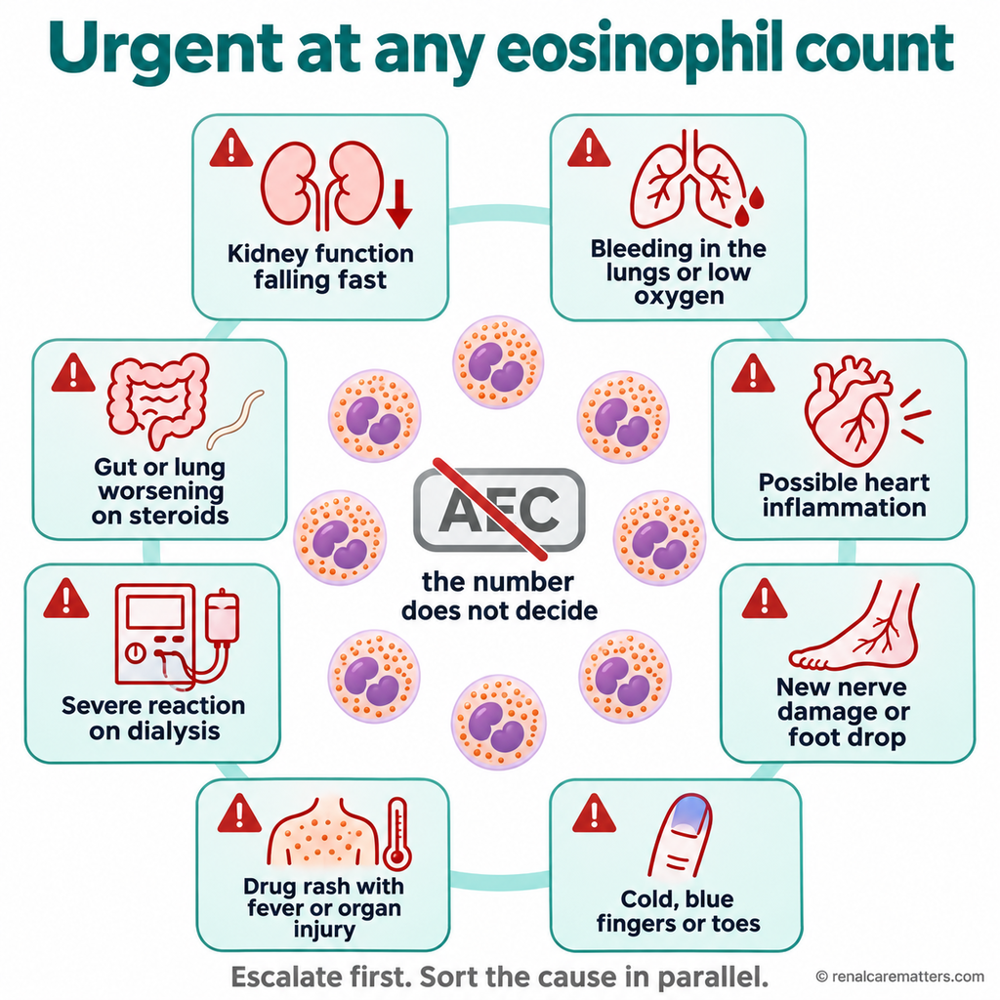
Any of these eight warning signs means get help now, whatever the eosinophil number shows.Anuman sa walong babalang senyales na ito ay nangangahulugang humingi agad ng tulong, anuman ang ipinapakita ng bilang ng eosinophils.Bisan unsa niining walo ka timaan sa peligro nagpasabot nga mangayo dayon og tabang, bisan unsa ang gipakita sa ihap sa eosinophils.Nanu man kareng walung senyales ning peligru buri nang sabyan manyaup ka agad tulung, nanu man ing pakit ning bilang ning eosinophils.
- AEC
- Absolute eosinophil count
Tests you can expectMga test na maaari mong asahanMga test nga mahimo nimong paabutonReng test a malyari mung panayan
- Repeat blood count and kidney blood tests (creatinine), compared with your older results. The trend matters more than one value.Ulit na blood count at kidney blood test (creatinine), ikinukumpara sa iyong mga lumang resulta. Mas mahalaga ang takbo kaysa sa iisang halaga.Usab nga blood count ug kidney blood test (creatinine), ikumpara sa imong karaang mga resulta. Mas importante ang dagan kaysa sa usa ka kantidad.Pasibayung blood count at kidney blood test (creatinine), ikumpara kareng dati mung resulta. Mas maulaga ing takbu kesa king metung a bilang.
- A urine test looked at under the microscope. What it shows guides the next step. A separate "urine eosinophil" test is no longer recommended because it does not help tell causes apart.Urine test na tinitingnan sa microscope. Ang ipinapakita nito ang gumagabay sa susunod na hakbang. Hindi na inirerekomenda ang hiwalay na "urine eosinophil" test dahil hindi ito nakatutulong na makilala ang mga sanhi.Urine test nga tan-awon sa microscope. Ang gipakita niini ang mogiya sa sunod nga lakang. Dili na girekomenda ang lahi nga "urine eosinophil" test tungod kay dili kini makatabang sa pag-ila sa mga hinungdan.Urine test a lalawan king microscope. Ing resulta na ing gabay king susunod a step. E ne irekomenda ing aliwang "urine eosinophil" test uli ta ali ya makatulung king pamakilala kareng sanhi.
- Tests for worms — a blood test and several stool samples — especially before any steroid treatment.Mga test para sa bulate — isang blood test at ilang sample ng dumi — lalo na bago ang anumang gamutang steroid.Mga test alang sa ulod — usa ka blood test ug pipila ka sample sa tae — ilabi na sa dili pa ang bisan unsang pagtambal sa steroid.Reng test para king bulati — metung a blood test at ilang sample ning tai — lalu na bayu ing nanu mang panulu a steroid.
- Sometimes a kidney biopsy — a small needle sample of kidney tissue — when the result would change your treatment.Minsan, kidney biopsy — maliit na sample ng tissue ng bato gamit ang karayom — kapag babaguhin ng resulta ang iyong gamutan.Usahay, kidney biopsy — gamay nga sample sa tissue sa kidney gamit ang dagom — kung usbon sa resulta ang imong pagtambal.Misan, kidney biopsy — malati a sample ning tissue ning batu gamit ing karayum — nung bagwan ning resulta ing panulu mu.
What treatment usually looks likeAno ang karaniwang hitsura ng gamutanUnsa ang kasagarang dagway sa pagtambalNanu ing karaniwang itsura ning panulu
When a medicine is the cause, the most important treatment is stopping it early. An inflamed kidney can heal; a scarred kidney cannot. If your kidney does not improve within days, your doctor may suggest a short course of a steroid medicine such as prednisone, started early and not continued longer than needed.Kapag gamot ang sanhi, ang pinakamahalagang gamutan ay ang maagang pagtigil dito. Gumagaling ang namamagang bato; hindi na ang batong may peklat. Kung hindi bumuti ang iyong bato sa loob ng ilang araw, maaaring imungkahi ng iyong doktor ang maikling kurso ng steroid gaya ng prednisone, sinisimulan nang maaga at hindi pinahahaba nang higit sa kailangan.Kung tambal ang hinungdan, ang labing importanteng pagtambal mao ang sayo nga paghunong niini. Mamaayo ang nanghubag nga kidney; dili na ang kidney nga adunay samad. Kung dili mamaayo ang imong kidney sulod sa pipila ka adlaw, mahimong isugyot sa imong doktor ang mubo nga kurso sa steroid sama sa prednisone, sugdan og sayo ug dili palugwayan labaw sa gikinahanglan.Nung gamut ing sanhi, ing pekamaulagang panulu iyang agad a pamaninaya kaniti. Manyawa ya ing mamagang batu; e na ing batung atin piklat. Nung e menyawa ing batu mu king lub ning ilang aldo, malyari nang imungkahi ning doktor mu ing maikling course ning steroid antimo king prednisone, simulan a agad at e pakalawiran lagpas king kailangan.
Do not stop prescribed medicines on your ownHuwag ihinto nang mag-isa ang mga iniresetang gamotAyaw hunonga nga ikaw ra ang mga gireseta nga tambalE mu ipaninaya nung ika mu ing gamut a reseta
Some medicines cannot be stopped suddenly, and your doctor may need to give a safe replacement. Tell your doctor about every medicine, including pain relievers, acid pills, herbal products, and supplements bought without a prescription — a photo of each label helps.May mga gamot na hindi maaaring biglang ihinto, at maaaring kailangang magbigay ang iyong doktor ng ligtas na kapalit. Sabihin sa iyong doktor ang bawat gamot, kasama ang mga pain reliever, gamot sa asido, herbal na produkto, at supplement na binili nang walang reseta — makatutulong ang litrato ng bawat label.Adunay mga tambal nga dili mahimong kalit nga hunongon, ug mahimong kinahanglan sa imong doktor nga mohatag og luwas nga puli. Sultihi ang imong doktor sa matag tambal, lakip ang mga pain reliever, tambal sa asido, herbal nga produkto, ug supplement nga gipalit nga walay reseta — makatabang ang litrato sa matag label.Atin gamut a ali malyaring biglang ipaninaya, at malyaring kailangan nang mamye ning doktor mu ing ligtas a kapalit. Sabyan me king doktor mu ing balang gamut, kayabe ding pain reliever, gamut king asidu, herbal a produktu, at supplement a sinali ka ali reseta — makatulung ing litratu ning balang label.
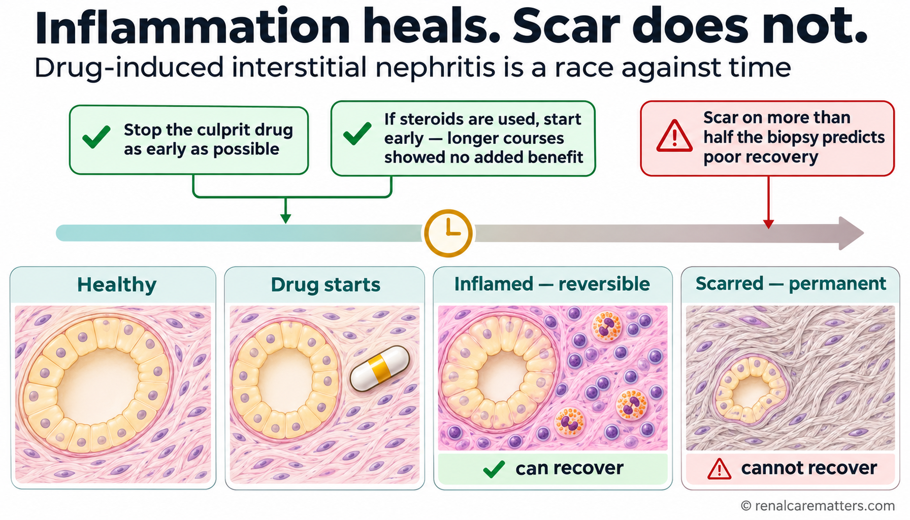
Inflamed kidney tissue can heal; scarred tissue cannot. That is why stopping the medicine early matters most.Gumagaling ang namamagang tissue ng bato; hindi na ang may peklat. Kaya pinakamahalaga ang maagang pagtigil sa gamot.Mamaayo ang nanghubag nga tissue sa kidney; dili na ang adunay samad. Mao nga labing importante ang sayo nga paghunong sa tambal.Manyawa ya ing mamagang tissue ning batu; e na ing atin piklat. Kaya pekamaulaga ing agad a pamaninaya king gamut.
Steroids bring the eosinophil count down within hours, but a normal count does not mean the kidney has recovered. Your doctor will judge recovery by your creatinine, how much urine you pass, and the urine test.Pinabababa ng steroid ang bilang ng eosinophils sa loob ng ilang oras, ngunit ang normal na bilang ay hindi nangangahulugang gumaling na ang bato. Huhusgahan ng iyong doktor ang paggaling batay sa iyong creatinine, kung gaano karami ang iyong ihi, at sa urine test.Pakunhuran sa steroid ang ihap sa eosinophils sulod sa pipila ka oras, apan ang normal nga ihap wala magpasabot nga naayo na ang kidney. Hukman sa imong doktor ang pagkaayo base sa imong creatinine, kung pila ang imong ihi, ug sa urine test.Pababan ning steroid ing bilang ning eosinophils king lub ning ilang oras, oneng ing normal a bilang e na buring sabyan a menyawa ne ing batu. Pasyan ning doktor mu ing pamanyawa batay king creatinine mu, nung pilan ing atsing mu, at king urine test.
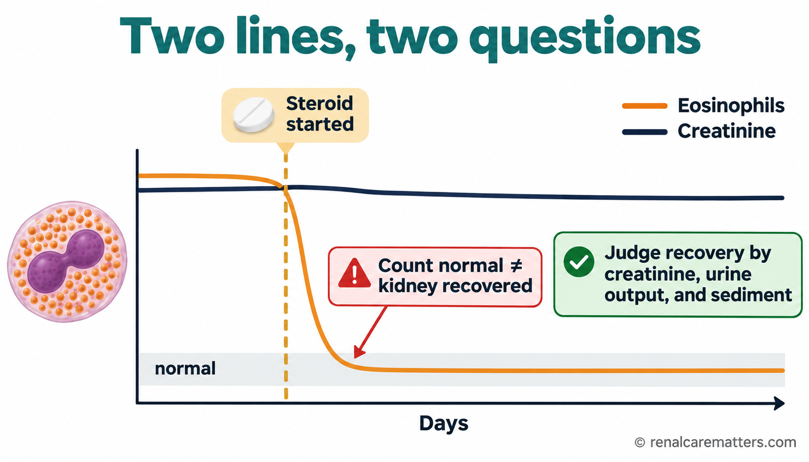
Two separate questions: the eosinophil count can fall quickly while the kidney test stays high.Dalawang magkahiwalay na tanong: maaaring mabilis bumaba ang bilang ng eosinophils habang nananatiling mataas ang kidney test.Duha ka lahi nga pangutana: mahimong paspas mokunhod ang ihap sa eosinophils samtang nagpabilin nga taas ang kidney test.Adwang magkahiwalay a kutang: malyaring mabilis a bumaba ing bilang ning eosinophils kabang manatiling matas ing kidney test.
Before steroids: the worm checkBago ang steroid: ang pagsusuri sa bulateSa dili pa ang steroid: ang pagsusi sa ulodBayu ing steroid: ing worm check (pamanintun king bulati)
Strongyloides can hide quietly in the gut for decades after a childhood spent barefoot on soil. Steroids can make it multiply quickly and carry gut bacteria into the blood, causing a life-threatening infection — often while the eosinophil count looks normal. That is why your doctor may ask where you grew up and may test or treat for worms before or while starting steroids.Ang Strongyloides ay maaaring tahimik na magtago sa bituka nang ilang dekada matapos ang pagkabatang nakayapak sa lupa. Maaari itong padamihin nang mabilis ng steroid at dalhin ang bacteria ng bituka sa dugo, na nagdudulot ng impeksyong nagbabanta sa buhay — kadalasan habang mukhang normal ang bilang ng eosinophils. Kaya maaaring itanong ng iyong doktor kung saan ka lumaki at maaaring mag-test o gumamot para sa bulate bago o habang sinisimulan ang steroid.Ang Strongyloides mahimong hilom nga motago sa tinai sulod sa daghang dekada human sa pagkabata nga nagtiniil sa yuta. Ang steroid makapadaghan niini dayon ug makadala sa bacteria sa tinai ngadto sa dugo, hinungdan sa impeksyon nga makapameligro sa kinabuhi — kasagaran samtang normal tan-awon ang ihap sa eosinophils. Mao nga mahimong pangutan-on sa imong doktor kung asa ka nagdako ug mahimong mo-test o motambal alang sa ulod sa dili pa o samtang sugdan ang steroid.Ing Strongyloides malyari yang tahimik a magtagu king bituka king mangilang dekada, manibat kabang anak ka pa at mamarandam ka a ala sapin (nakayapak) king gabun. Malyari neng padamian a mabilis ning steroid at dalan ing bacteria ning bituka king daya, a magdulut impeksiun a mabanta king bie — karaniwan kabang lumawang normal ing bilang ning eosinophils. Kaya malyari nang kutnan ning doktor mu nung nukarin ka mekamaragul at malyari yang mag-test o manulu para king bulati bayu o kabang simulan ing steroid.
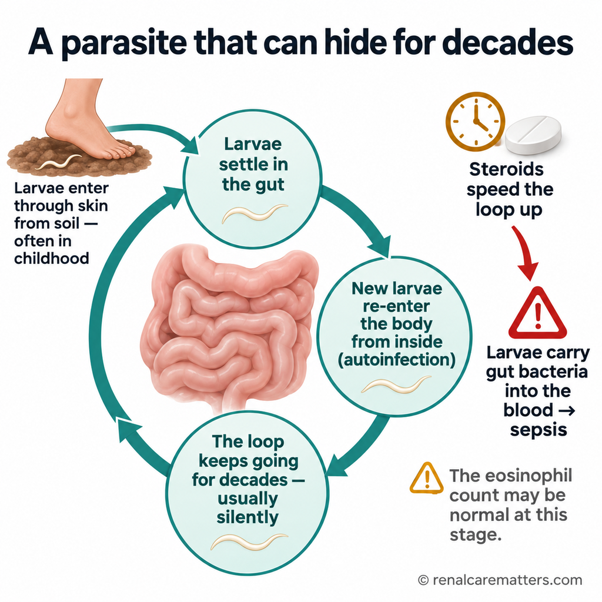
This parasite can live quietly in the gut for decades. Steroids speed up its cycle and can lead to a dangerous blood infection.Ang parasitong ito ay maaaring tahimik na mabuhay sa bituka nang ilang dekada. Pinabibilis ng steroid ang siklo nito at maaaring humantong sa mapanganib na impeksyon sa dugo.Kini nga parasito mahimong hilom nga mabuhi sa tinai sulod sa daghang dekada. Paspasan sa steroid ang siklo niini ug mahimong mosangpot sa delikadong impeksyon sa dugo.Ing parasitung iti malyari yang mabie a tahimik king bituka king mangilang dekada. Palagwan ning steroid ing siklu na at malyari yang muntang king delikadung impeksiun king daya.
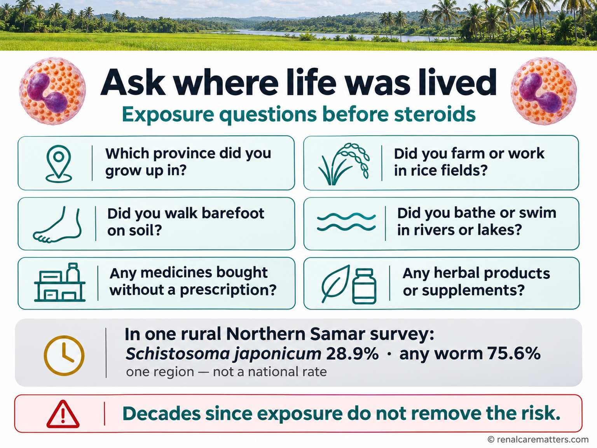
Six questions your doctor may ask. Where you grew up still matters decades later.Anim na tanong na maaaring itanong ng iyong doktor. Mahalaga pa rin kung saan ka lumaki kahit ilang dekada na ang lumipas.Unom ka pangutana nga mahimong ipangutana sa imong doktor. Importante gihapon kung asa ka nagdako bisan daghang dekada na ang milabay.Anam a kutang a malyaring kutnan ning doktor mu. Maulaga ya pa rin nung nukarin ka mekamaragul anya mu mangilang dekada ne ing milabas.
Do not take ivermectin on your ownHuwag uminom ng ivermectin nang mag-isaAyaw pag-inom og ivermectin nga ikaw raE ka manginum ivermectin nung ika mu
Ivermectin is the usual worm treatment, but the dose and timing depend on your situation and other medicines. Take it only when your doctor prescribes it.Ang ivermectin ang karaniwang gamot sa bulate, ngunit ang dosis at oras ay nakadepende sa iyong kalagayan at iba pang gamot. Inumin lamang ito kapag inireseta ng iyong doktor.Ang ivermectin ang kasagarang tambal sa ulod, apan ang dosis ug oras nagdepende sa imong kahimtang ug uban pang tambal. Inuma lamang kini kung gireseta sa imong doktor.Ing ivermectin ing karaniwang gamut king bulati, oneng ing dosis at oras makadepende king kalagayan mu at aliwang gamut. Inuman me mu nung ireseta ning doktor mu.
If you are on dialysisKung ikaw ay nagda-dialysisKung ikaw nagdialysisNung ika magdialysis
A slightly high eosinophil count is fairly common on hemodialysis and is usually harmless, but your team will still look for other causes. Tell the nurse immediately if, within minutes of starting a session, you feel itching, hives, swelling of the lips or throat, wheezing, chest tightness, or dizziness. The team will stop the machine, will not return the blood in the lines, and will treat the reaction first; the equipment is checked afterward.Medyo karaniwan ang bahagyang mataas na bilang ng eosinophils sa hemodialysis at kadalasang hindi nakapipinsala, ngunit hahanapin pa rin ng iyong team ang ibang sanhi. Sabihin agad sa nurse kung, sa loob ng ilang minuto mula sa simula ng session, nakaramdam ka ng pangangati, pantal, pamamaga ng labi o lalamunan, paghuni sa paghinga, paninikip ng dibdib, o pagkahilo. Ihihinto ng team ang makina, hindi ibabalik ang dugo sa mga tubo, at uunahing gamutin ang reaksyon; susuriin ang kagamitan pagkatapos.Medyo kasagaran ang gamay nga taas nga ihap sa eosinophils sa hemodialysis ug kasagaran dili makadaot, apan pangitaon gihapon sa imong team ang ubang hinungdan. Sultihi dayon ang nurse kung, sulod sa pipila ka minuto gikan sa pagsugod sa session, mobati ka og katol, pantal, paghubag sa ngabil o tutunlan, paghagashas, pagkugot sa dughan, o pagkalipong. Hunongon sa team ang makina, dili ibalik ang dugo sa mga tubo, ug unahon ang pagtambal sa reaksyon; susihon ang kagamitan human niini.Medyu karaniwan ing marakal a matas a bilang ning eosinophils king hemodialysis at karaniwan ali ya makasira, oneng panintunan pa rin ning team mu ing aliwang sanhi. Sabyan me agad ing nurse nung, king lub ning ilang minutu kaibat ning simula ning session, atin kang daman a makati, pantal, pamamaga ning labi o lalamunan, wheezing, paninikip ning dibdib (chest tightness), o pagkahilo (dizziness). Ipaninaya ning team ing makina, ali ibalik ing daya kareng tubu, at unan dang gamutan ing reaksiun; panintunan de ing kagamitan kaibat.
Follow-up and your allergy recordFollow-up at ang iyong talaan ng allergyFollow-up ug ang imong rekord sa allergyFollow-up at ing talaan mu ning allergy
Before you leave, know who will check your results and on what date. A kidney blood test is usually repeated within a few days, and again at about 3 months to look for lasting damage, called chronic kidney disease (CKD). That check includes your blood pressure, a urine albumin test, and your estimated glomerular filtration rate (eGFR), a number calculated from creatinine.Bago ka umalis, alamin kung sino ang titingin sa iyong mga resulta at sa anong petsa. Karaniwang inuulit ang kidney blood test sa loob ng ilang araw, at muli sa mga 3 buwan upang hanapin ang pangmatagalang pinsala, na tinatawag na chronic kidney disease (CKD). Kasama sa pagsusuring iyon ang iyong presyon ng dugo, urine albumin test, at ang iyong estimated glomerular filtration rate (eGFR), isang bilang na kinukuwenta mula sa creatinine.Sa dili pa ka mobiya, hibaloa kung kinsa ang motan-aw sa imong mga resulta ug sa unsang petsa. Kasagaran usbon ang kidney blood test sulod sa pipila ka adlaw, ug usab sa mga 3 ka bulan aron pangitaon ang dugay nga kadaot, nga gitawag og chronic kidney disease (CKD). Apil sa maong pagsusi ang imong presyon sa dugo, urine albumin test, ug ang imong estimated glomerular filtration rate (eGFR), usa ka numero nga gikuwenta gikan sa creatinine.Bayu ka mako, balwan me nung ninu ing manintun kareng resulta mu at king nanung petsa. Karaniwan pasibayuan ing kidney blood test king lub ning ilang aldo, at pasibayu king mga 3 bulan ban panintunan ing malawig a sira, a maki lagyung chronic kidney disease (CKD). Kayabe king pamanintun a ita ing presyun ning daya mu, urine albumin test, at ing estimated glomerular filtration rate (eGFR) mu, metung a bilang a kwentan manibat king creatinine.
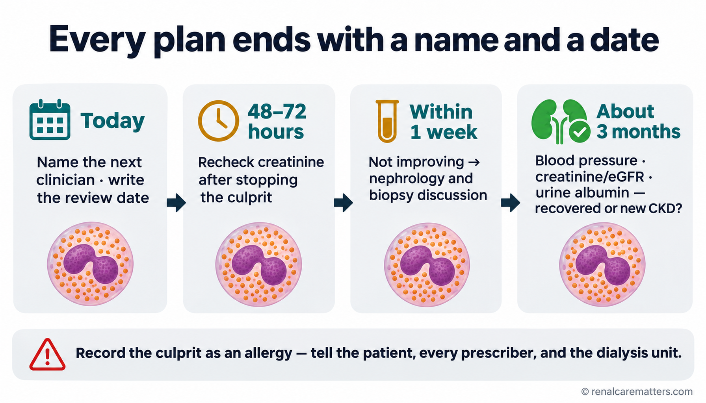
Who checks, and when: a named person and a date at every step, ending with a 3-month check for lasting kidney damage.Sino ang titingin, at kailan: may pangalan at petsa sa bawat hakbang, nagtatapos sa pagsusuri sa ika-3 buwan para sa pangmatagalang pinsala sa bato.Kinsa ang mosusi, ug kanus-a: adunay ngalan ug petsa sa matag lakang, nga matapos sa pagsusi sa ika-3 ka bulan alang sa dugay nga kadaot sa kidney.Ninu ing manintun, at kapilan: atin lagyu at petsa king balang pasimula, a matapos king pamanintun king ikatlung bulan para king malawig a sira king batu.
- eGFR
- Estimated glomerular filtration rate
- CKD
- Chronic kidney disease
Keep an allergy recordMagtabi ng talaan ng allergyPagtipig og rekord sa allergyMitagu kang talaan ning allergy
If a medicine or dialysis supply caused the problem, write its name and what happened on a card or in your phone. Show it to every doctor, pharmacist, and dialysis unit, so it is never given to you again.Kung isang gamot o gamit sa dialysis ang nagdulot ng problema, isulat ang pangalan nito at ang nangyari sa isang card o sa iyong telepono. Ipakita ito sa bawat doktor, pharmacist, at dialysis unit, upang hindi na ito muling maibigay sa iyo.Kung usa ka tambal o gamit sa dialysis ang hinungdan sa problema, isulat ang ngalan niini ug ang nahitabo sa usa ka card o sa imong telepono. Ipakita kini sa matag doktor, pharmacist, ug dialysis unit, aron dili na kini ihatag kanimo pag-usab.Nung metung a gamut o gamit king dialysis ing sanhi ning problema, isulat me ing lagyu na at ing milyari king metung a card o king telepunu mu. Ipakit me king balang doktor, pharmacist, at dialysis unit, ban e na pasibayung ibye keka.
Questions to ask your doctorMga tanong para sa iyong doktorMga pangutana alang sa imong doktorReng kutang para king doktor mu
- Which of my medicines could be causing this, and which should I stop or switch?Alin sa aking mga gamot ang maaaring sanhi nito, at alin ang dapat kong itigil o palitan?Hain sa akong mga tambal ang mahimong hinungdan niini, ug hain ang angay nakong hunongon o ilisan?Nanu kareng gamut ku ing malyaring sanhi na niti, at nanu ing dapat kung ipaninaya o palitan?
- Is my urine test pointing to the kidney filters or to inflammation around the tubes?Ang aking urine test ba ay tumuturo sa mga filter ng bato o sa pamamaga sa paligid ng mga tubo?Ang akong urine test ba nagtudlo sa mga filter sa kidney o sa paghubag palibot sa mga tubo?Ing urine test ku ba manuru kareng filter ning batu (glomeruli) o king inflammation palibut da reng tubules?
- Do I need a kidney biopsy, and what would it change?Kailangan ko ba ng kidney biopsy, at ano ang babaguhin nito?Kinahanglan ba nako og kidney biopsy, ug unsa ang usbon niini?Kailangan ku ba ing kidney biopsy, at nanu ing bagwan na?
- Should I be tested or treated for worms before steroids?Dapat ba akong i-test o gamutin para sa bulate bago ang steroid?Angay ba ko i-test o tambalan alang sa ulod sa dili pa ang steroid?Dapat ku bang i-test o gamutan para king bulati bayu ing steroid?
- Who will check my results, and on what date?Sino ang titingin sa aking mga resulta, at sa anong petsa?Kinsa ang motan-aw sa akong mga resulta, ug sa unsang petsa?Ninu ing manintun kareng resulta ku, at king nanung petsa?
Questions people often askMga madalas itanongMga kanunay nga gipangutanaReng kutang a masyadung kutnan
For cliniciansPara sa mga klinikoAlang sa mga klinikoPara kareng kliniko
The Clinicians tab holds the full diagnostic pathway, the evidence with references, cause-specific management, and the Strongyloides workflow.Nasa tab na Clinicians ang buong diagnostic pathway, ang ebidensya kasama ang mga sanggunian, ang pamamahala ayon sa sanhi, at ang Strongyloides workflow.Anaa sa tab nga Clinicians ang tibuok diagnostic pathway, ang ebidensya uban ang mga tinubdan, ang pagdumala sumala sa hinungdan, ug ang Strongyloides workflow.Atyu king tab a Clinicians ing sablang diagnostic pathway, ing ebidensya kayabe ding reperensya, ing pamamahala agpang king sanhi, at ing Strongyloides workflow.
The bedside summary
An eosinophil count on a complete blood count (CBC) is one of the cheapest numbers in medicine and one of the easiest to misread. Next to a rising creatinine it can mean three different things: a reactive bystander signal (a drug, a parasite, a dialysis circuit), a marker of a systemic disease that is also injuring the kidney (vasculitis, a hypersensitivity syndrome, a clonal disorder), or a direct contributor to tissue damage through eosinophil granule toxins. The count alone cannot tell you which. The kidney phenotype — what the urine sediment shows, how fast function is falling — and the exposure timeline decide urgency and the next test.
The same eosinophil count can mean three things: the cells are reacting to something else, they are a sign of a disease that is also hurting the kidney, or they are injuring the kidney directly. The urine and the history tell you which.
The one sequence this guide teaches
Screen for organ threat → confirm the absolute eosinophil count (AEC) and the kidney trajectory → read the urine sediment and the exposure timeline together → branch by phenotype → test, refer, and reassess on a date. A modest count does not lower urgency, and a normal count does not exclude the diagnosis.
Urgent regardless of the eosinophil count
Rapidly progressive kidney dysfunction or a nephritic sediment · pulmonary hemorrhage or hypoxemia · suspected myocarditis (chest pain, arrhythmia, new heart failure, rising troponin) · acute neuropathy, foot drop, or digital ischemia · a drug eruption with fever, facial edema, or organ injury · anaphylaxis or a severe reaction on dialysis · suspected Strongyloides hyperinfection (new gastrointestinal or respiratory deterioration, or gram-negative bacteremia, in a patient on steroids). Escalate for oliguria or anuria, refractory hyperkalemia, severe acidosis, pulmonary edema, or uremic complications; kidney replacement therapy (KRT) follows standard indications.
Any of these eight warning signs means act now, whatever the eosinophil number shows.
- AEC
- Absolute eosinophil count
Intradialytic emergency — act before the differential returns
For a severe suspected hypersensitivity reaction during hemodialysis (HD): stop the pump, do not return the extracorporeal blood, call the emergency team, and give intramuscular epinephrine for anaphylaxis per local protocol.1 Investigation of the circuit comes after the patient is stable.
What this guide is — and is not
An educational decision-support framework for adult practice, written for internists, hospitalists, nephrologists, trainees, renal pharmacists, and dialysis teams. It is not a clinical practice guideline. Pediatric and pregnancy-specific thresholds and dosing are out of scope. Test access, drug registration, and referral pathways vary by country and facility.
Opening case — revisited at each step
A composite patient
A 64-year-old with hypertension started an over-the-counter proton pump inhibitor (PPI) for dyspepsia six weeks ago and took mefenamic acid on and off for knee pain. Creatinine has risen from 1.0 to 2.1 mg/dL (88 to 186 µmol/L) over ten days. The CBC shows a white blood cell (WBC) count of 8,000 cells/µL with 8% eosinophils. There is no rash and no fever. What do the urine sediment, the exposure timeline, and the extra-renal examination add?
Hold the urge to name a culprit. The count is modestly elevated, the patient feels well, and the classic allergic triad is absent — which is how most drug-induced interstitial nephritis actually presents. Each section below adds one layer of information to this patient, and the decision changes as the layers accumulate.
Count the cells correctly
The percentage on a differential depends on every other white cell. A patient with lymphopenia can show 10% eosinophils with a normal absolute count; a patient with neutrophilia can hide a raised one. Work from the absolute count.
AEC = WBC × eosinophil fraction
Our patient: 8,000 cells/µL × 0.08 = 640 cells/µL (0.64 × 10⁹/L). If your laboratory reports WBC in × 10⁹/L, the answer stays in × 10⁹/L: 8.0 × 0.08 = 0.64 × 10⁹/L.
| Term | Threshold (conventional · SI) | What it means clinically |
|---|---|---|
| Eosinophilia | >500 cells/µL · >0.5 × 10⁹/L | The usual clinical threshold; laboratory reference ranges vary |
| Mild | ~500 to <1,500 cells/µL | Commonly reactive (drug, atopy, helminth, dialysis circuit) — still review the kidney |
| Moderate | 1,500–5,000 cells/µL | Overlaps hypereosinophilia; needs a cause |
| Severe | >5,000 cells/µL | Organ-damage risk rises; expedite evaluation |
| Hypereosinophilia (HE) | ≥1,500 cells/µL on two counts ≥2 weeks apart, or tissue HE | Defines persistence — it is not a waiting period before treating a threatened organ |
| Hypereosinophilic syndrome (HES) | Blood and/or tissue HE + attributable organ damage | Requires exclusion of competing explanations |
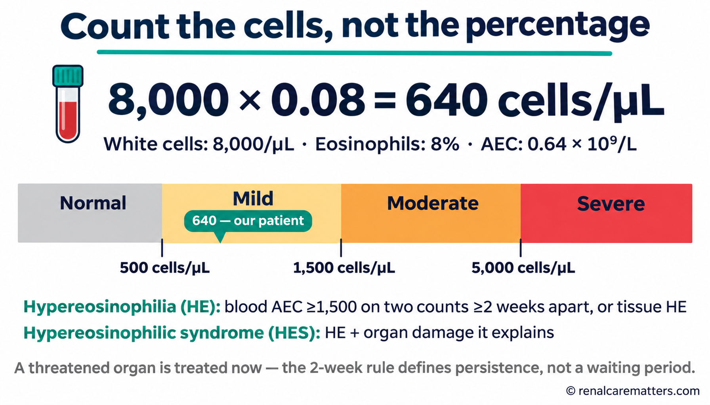
Multiply the white cell count by the eosinophil fraction to get the absolute count, then see where it sits on the ruler. A threatened organ is treated now; the two-week rule only defines persistence.
- AEC
- Absolute eosinophil count
- HE
- Hypereosinophilia
- HES
- Hypereosinophilic syndrome
Consensus definitions These definitions follow the refined international criteria for eosinophil disorders, which keep the 1,500 cells/µL HE threshold, accept tissue HE with a lower blood count, and sort HE and HES into clonal (primary), reactive, and idiopathic forms.2 The French national guideline translates the same framework into a step-by-step etiologic workup that starts with the most common reactive causes before reaching for marrow studies.3
Physiologic reasons a count misleads
- Glucocorticoids collapse the count within hours by redistributing eosinophils out of the blood and accelerating their apoptosis. A normal count after a "stat dose" of hydrocortisone or a methylprednisolone pulse says nothing about the disease that was present the day before.
- Diurnal variation mirrors cortisol: counts run lowest in the morning and higher at night. For serial monitoring — especially in a dialysis unit — sample at a consistent time.
- Adrenal insufficiency raises the count. An unexplained eosinophilia in a hypotensive, hyponatremic, or critically ill patient should prompt that consideration.
- Most eosinophils live in tissue, not blood. They circulate for less than a day before homing to the gut, lung, skin, and other tissues, so tissue-predominant disease can coexist with a normal blood count.
Most eosinophils live in tissue, not blood. A steroid dose, the time of day, and adrenal function all change the blood count without changing the disease underneath.
How eosinophils reach the kidney — four routes
Normal eosinopoiesis runs on three cytokines — interleukin-5 (IL-5), interleukin-3 (IL-3), and granulocyte-macrophage colony-stimulating factor (GM-CSF) — with IL-5 the most specific driver of eosinophil expansion and survival. Eotaxins acting on the C-C chemokine receptor 3 (CCR3) then pull eosinophils from blood into tissue. Once there, eosinophils release cytotoxic granule proteins — major basic protein (MBP), eosinophil cationic protein (ECP), eosinophil peroxidase (EPX), and eosinophil-derived neurotoxin (EDN) — plus lipid mediators and cytokines. That chain explains both why eosinophils can injure tissue directly and why IL-5–targeted drugs work in some eosinophilic diseases. It does not mean every eosinophil found near an injured tubule caused the injury.
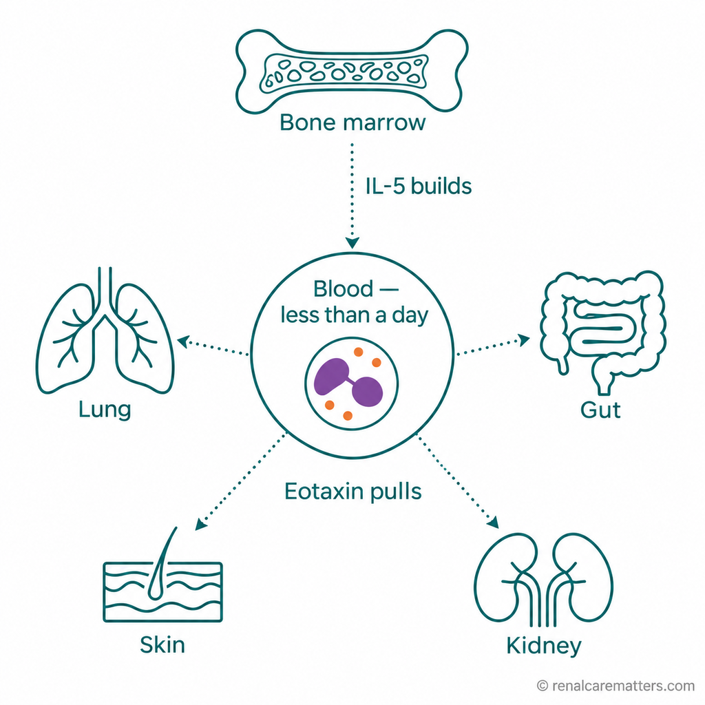
Eosinophils are made in the bone marrow, pass through the blood for less than a day, and are pulled into tissues such as the lung, gut, skin, and kidney.
- IL-5
- Interleukin-5
Drug-triggered immune tubulointerstitial injury
A T-cell–mediated hypersensitivity response produces interstitial edema, inflammation, and tubulitis; eosinophils are recruited variably. Untreated, edema and inflammation progress to interstitial fibrosis and tubular atrophy. The biopsy may contain few or no eosinophils.
Systemic immune disease
In eosinophilic granulomatosis with polyangiitis (EGPA), eosinophilic tissue inflammation and small-vessel vasculitis overlap; glomerular capillary necrosis produces a nephritic sediment. In immunoglobulin G4-related kidney disease (IgG4-RKD), a lymphoplasmacytic fibroinflammatory process causes tubulointerstitial disease, with blood eosinophilia as a frequent passenger.
Reactive and clonal eosinophilia
Type 2 cytokines drive reactive expansion; clonal tyrosine kinase fusions drive primary HES. Degranulation can injure the interstitium directly, and HES can damage the kidney indirectly through thrombosis or cardiac emboli. Renal phenotypes are heterogeneous and described mostly in case series.
Vascular and extracorporeal exposure
Cholesterol crystals lodge in small arteries and arterioles, causing ischemia and a secondary inflammatory reaction. Dialysis reactions involve immunoglobulin E (IgE)-mediated allergy, complement activation, or bradykinin generation. Timing, lot and circuit changes, and infused agents carry more information than the count.
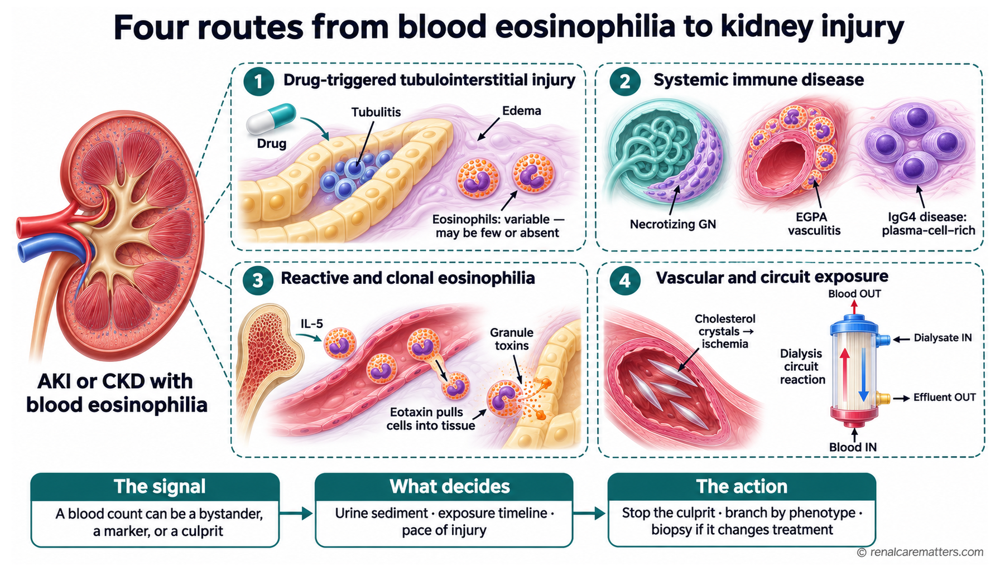
Four ways blood eosinophilia and kidney injury connect: an immune reaction to a drug in the tubules and interstitium, vasculitis of small vessels and glomeruli, eosinophils releasing toxic granule proteins, and cholesterol crystals or dialysis-circuit exposures that injure through blood vessels or the bloodstream.
- EGPA
- Eosinophilic granulomatosis with polyangiitis
- IL-5
- Interleukin-5
- MBP
- Major basic protein
- EPX
- Eosinophil peroxidase
- IgE
- Immunoglobulin E
What the numbers actually say
No single generalizable incidence exists for eosinophilia across all kidney disease. The figures below come from different populations, thresholds, and denominators — blood versus tissue, percentage versus absolute count, biopsy cohort versus population — and must not be pooled or compared directly.
| Measure | Population / denominator | Finding | Limitation |
|---|---|---|---|
| PPI-associated acute interstitial nephritis (AIN) | 572,661 new PPI users, New Zealand national data | Crude incidence of AIN causing hospitalization or death: 11.98 (95% confidence interval [CI] 9.11–15.47) per 100,000 person-years with current use vs 1.68 (0.91–2.86) with past use4 | One setting and outcome definition; the absolute excess is about 1 case per 9,700 person-years |
| Causes of biopsy-proven AIN | 133 patients, single U.S. center, 1993–2011 | Drugs 70% (antibiotics 49%, PPIs 14%, NSAIDs 11% of drug cases); omeprazole was the single commonest culprit5 | Biopsy selection bias; referral center |
| Missed AIN without biopsy | First 60 AKI participants, Kidney Precision Medicine Project (KPMP) | AIN in 22%; treating clinicians had suspected AIN in only 54% of adjudicated AIN cases6 | Small research cohort; not a prevalence estimate |
| Persistent eosinophilia on maintenance HD | 510 patients, three UK units; AEC >1,000 cells/µL for 3 months | 24/510 (4.7%), vs 1.5% in the same units five years earlier; associated with angiotensin-converting enzyme (ACE) inhibitor use (41.7% vs 12.5%); no excess admissions or mortality7 | Threshold, persistence rule, and equipment era limit generalizability |
| EGPA incidence | UK primary-care and hospital records, 2006–2019 | 2.3–4.0 diagnosed cases per million person-years; prevalence rose from 22.7 to 45.6 per million8 | Diagnosed disease only; all organ manifestations |
| Renal pathology in EGPA | 63 patients with biopsy-proven renal involvement | Pauci-immune necrotizing glomerulonephritis (GN) 78%; pure AIN 10%; marked interstitial inflammation 44%; membranous nephropathy 10%, mostly antineutrophil cytoplasmic antibody (ANCA)-negative9 | Denominator excludes EGPA without biopsied kidney involvement |
| Tissue eosinophils and chronic kidney disease (CKD) outcome | 563 native biopsies, Japan | Interstitial eosinophilic aggregates in 17% (50% of diabetic nephropathy); adjusted hazard ratio (HR) 3.61 (2.47–5.29) for KRT or ≥40% eGFR decline10 | Prognostic association; no evidence that lowering eosinophils changes outcome |
| Blood eosinophils and CKD progression | U.S. electronic records, CKD stages 3–4 | AEC ≥300 cells/µL associated with progression (HR 1.30–1.50)11 | The study cut-off sits below the clinical eosinophilia threshold; residual confounding likely |
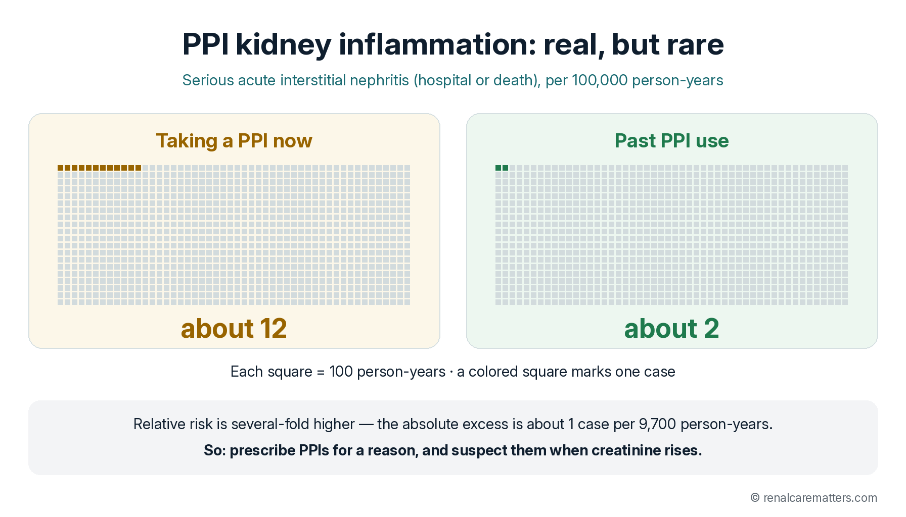
Kidney inflammation from acid-reducing PPIs is several times more likely while taking them, but still rare: about 1 extra serious case for every 9,700 years of use.
- PPI
- Proton pump inhibitor
- AIN
- Acute interstitial nephritis
Observational Read the last two rows carefully. Eosinophils in CKD tissue and blood track with worse outcomes, but an association is not a treatment target. Diabetic nephropathy, the commonest setting for eosinophilic aggregates, is itself a strong progression risk, and type 2 inflammation may be a marker of injury activity rather than its driver. No trial has tested eosinophil-lowering therapy for CKD progression.
The diagnostic pathway
KDIGO AKI definition — still the 2012 criteria
Guideline AKI is a creatinine rise of ≥0.3 mg/dL (≥26.5 µmol/L) within 48 hours, a rise to ≥1.5 times baseline within the prior 7 days, or urine output <0.5 mL/kg/h for 6 hours.1213 KDIGO released a 2026 AKI and acute kidney disease (AKD) guideline draft for public review that expands the framework to the AKI–AKD continuum and adds structural biomarkers; at the time of writing the work group was preparing the final version, so the 2012 criteria remain the operative definition.14
Step 4 — branch by phenotype
| Phenotype | Findings | Next move |
|---|---|---|
| Glomerular | Dysmorphic red blood cells (RBCs), RBC casts, new substantial proteinuria | Expedited nephrology review; myeloperoxidase (MPO) and proteinase 3 (PR3) ANCA, anti-glomerular basement membrane (GBM) antibody, complement, targeted autoimmune and infection tests. Pulmonary–renal presentations are emergencies. |
| Interstitial | Sterile pyuria, white-cell casts, mild proteinuria, glycosuria, phosphate or bicarbonate wasting | Exposure review and culprit withdrawal; early nephrology input if not improving. Bland urine is compatible with AIN, and NSAID-related AIN can present with nephrotic-range proteinuria from coexisting minimal-change disease. |
| Vascular / embolic | Stepwise decline after instrumentation, livedo, blue toes with palpable pulses, low complement | Fundoscopy, skin examination; skin or kidney biopsy when it would change management |
| Stable chronic | Stable kidney function and urine, mild isolated eosinophilia, plausible benign cause | Trend after review with a booked recheck. Persistent unexplained HE, a rising AEC, an abnormal smear or other cytopenias, or systemic signs → expedited workup. |
| Transplant or dialysis | Allograft dysfunction; symptoms tracking dialysis sessions | Direct escalation route — see the dedicated section |
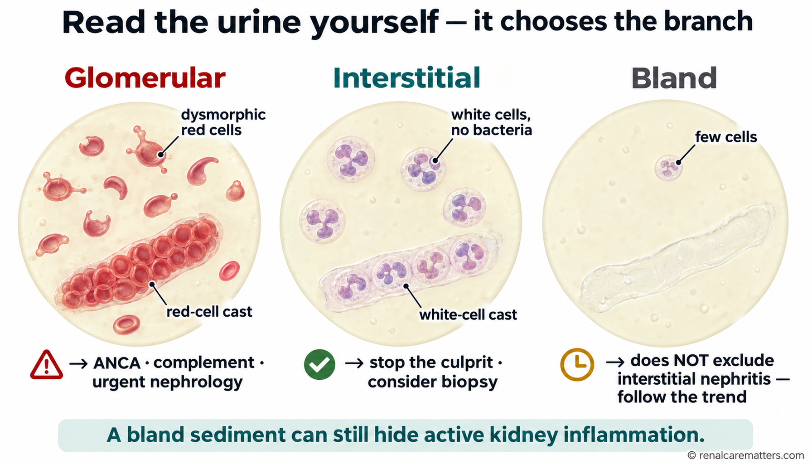
What the urine looks like under the microscope chooses the next step. A nearly empty sample can still hide active kidney inflammation.
- ANCA
- Antineutrophil cytoplasmic antibody
Step 5 — targeted second-line tests
- Possible EGPA or HES with cardiac concern: electrocardiogram (ECG), troponin trend, echocardiography, and cardiac magnetic resonance imaging (MRI) when indicated. Interpret troponin and natriuretic peptides against the CKD baseline and their trajectory.
- Unexplained HE: hematology-guided tryptase, vitamin B12, blood and marrow morphology, flow cytometry, T-cell clonality, and testing for the FIP1L1::PDGFRA fusion and other kinase rearrangements.3
- Possible IgG4-related disease (IgG4-RD): serum IgG4, C3 and C4, cross-sectional imaging, and a tissue plan.
- Anterior uveitis or eye symptoms: ophthalmology referral for tubulointerstitial nephritis and uveitis (TINU).
- Granulomatous interstitial nephritis on biopsy: drugs, sarcoidosis, and exposure-driven infection — including tuberculosis (TB) — must be pursued before immunosuppression.
- Nonrenal differential when supported: adrenal insufficiency, lymphoma and other malignancy, helminths.
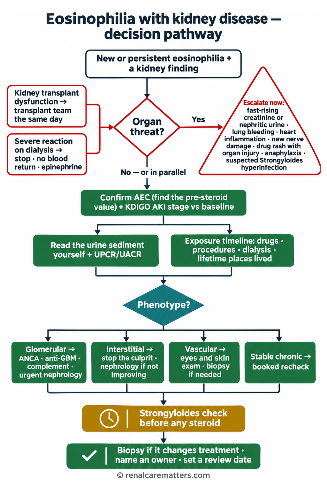
The decision pathway in one picture: check for threatened organs first, confirm the eosinophil count and the kidney trend, then let the urine findings and exposure history choose the branch. Transplant problems and reactions on dialysis skip straight to urgent escalation.
- AEC
- Absolute eosinophil count
- AKI
- Acute kidney injury
- ANCA
- Antineutrophil cytoplasmic antibody
- HD
- Hemodialysis
Text equivalent of the figure: entry "new or persistent eosinophilia" → organ-threat screen (urgent list above) → confirm AEC and kidney change → urine-sediment branch and exposure-timeline branch in parallel → directed tests, referral, and a dated reassessment. Kidney transplant dysfunction and dialysis emergencies bypass the sequence as direct escalation routes.
Case check-in
Our patient's urine shows 15–20 white cells per high-power field, no bacteria, no dysmorphic red cells, and a UPCR of 0.6 g/g. That is an interstitial phenotype with two plausible culprits on the timeline — a PPI and an NSAID — and no glomerular or embolic features. The count of 640 cells/µL is weak support; the sediment and the timeline carry the diagnosis.
Urine eosinophils — retire the test
Test-performance callout
Moderate Among 566 patients with a native kidney biopsy and a urine eosinophil test within one week, a 1% cutoff gave a sensitivity of 30.8% and specificity of 68.2% for AIN — positive and negative likelihood ratios of 0.97 and 1.01. A likelihood ratio of 1 means the result does not move the probability at all. Urine eosinophils appeared across many non-AIN diagnoses.15
The physiologic reason is straightforward: eosinophiluria reflects inflammation anywhere along the urinary tract — pyelonephritis, cystitis, prostatitis, atheroembolism, glomerulonephritis — not interstitial hypersensitivity specifically. Use the actual sediment, the clinical trajectory, and a biopsy when indicated.
Moderate The field has moved to interferon-γ–induced chemokines. Urinary C-X-C motif chemokine ligand 9 (CXCL9) was identified by urine proteomics and reached an area under the curve (AUC) of 0.94 for AIN in external validation cohorts.16 In patients receiving ICIs, urinary CXCL9 discriminated biopsy-proven ICI-associated AIN from other AKI (AUC 0.83) better than tumor necrosis factor-α (TNF-α; AUC 0.63), even after prior steroid exposure.17 These assays are not yet widely available and do not replace biopsy, but they — not urine eosinophils — represent where noninvasive AIN diagnosis is heading.
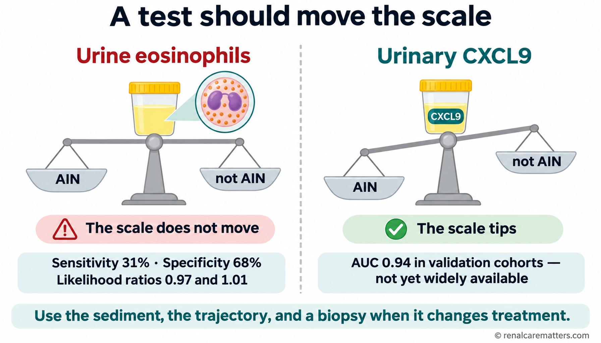
A useful test moves the odds. Urine eosinophils leave them where they were; newer urine markers such as CXCL9 move them, though they are not yet widely available.
- AIN
- Acute interstitial nephritis
- CXCL9
- C-X-C motif chemokine ligand 9
- AUC
- Area under the receiver-operating-characteristic curve
Cause-specific diagnosis and management matrix
Read across each row: what the patient looks like, the clue that separates this cause from the others, what to do today, and how to confirm or whom to call. Drug-induced AIN and the steroid decision are expanded below the table.
| Cause | Presentation & discriminating clues | Immediate action | Confirmation / referral |
|---|---|---|---|
| Drug-induced AIN | Unexplained AKI days to months after a drug; fever, rash, and eosinophilia each often absent. Beta-lactams and other antibiotics, PPIs, NSAIDs. | Stop likely culprits; substitute safely; review renal dosing and volume; document drug, dates, severity, attribution confidence. No deliberate rechallenge. | Early nephrology if not improving; biopsy when feasible and it changes treatment |
| ICI-associated kidney injury | Typically months into therapy; concurrent PPI, NSAID, or antibiotic common; extra-renal immune-related adverse events. | Exclude hemodynamic, obstructive, infectious, and glomerular causes; stop co-culprits; joint oncology–nephrology decision on holding the ICI. | Biopsy if diagnosis or rechallenge decision is uncertain |
| Drug reaction with eosinophilia and systemic symptoms (DRESS) | Fever, diffuse eruption, facial edema, lymphadenopathy, evolving organ injury 2–8 weeks after allopurinol, aromatic anticonvulsants, sulfonamides, vancomycin. Eosinophilia may appear late. | Stop culprit immediately; liver, kidney, CBC, cardiac and lung assessment; admit for significant organ involvement. | Dermatology + nephrology; severity-directed therapy |
| EGPA | Adult-onset asthma, sinonasal disease or polyps, plus neuropathy, purpura, infiltrates, cardiac findings, or nephritic urine. ANCA (usually MPO) in about 40% overall, but in most patients with biopsied renal disease. | Organ-threatening disease: urgent nephrology/rheumatology; cardiac screen; Strongyloides safety check in parallel. | ANCA, biopsy; induction per EGPA guidance |
| Cholesterol crystal embolization | Subacute or stepwise decline after arterial instrumentation or spontaneously with severe atherosclerosis; livedo, blue toes with pulses, retinal plaques, transient eosinophilia, low complement. | Kidney support; statin and atherosclerotic risk control; individualize anticoagulation. | Skin or kidney biopsy when needed and feasible |
| IgG4-RKD | Low complement, cortical lesions on imaging, plasma-cell–rich tubulointerstitial nephritis (TIN), autoimmune pancreatitis, gland enlargement, retroperitoneal fibrosis. | Relieve obstruction; exclude mimics; do not diagnose on serum IgG4 alone. | Clinicopathologic correlation; specialist-directed therapy |
| HES and clonal disorders | Persistent unexplained HE or tissue-predominant disease with cardiac, thrombotic, neurologic, pulmonary, or renal injury. | Organ-threatening disease may need urgent glucocorticoids with parasite risk management. | Hematology; molecular testing |
| Helminths incl. Strongyloides | Reactive eosinophilia that may coexist with an unrelated AKI; residence in tropical areas even decades ago; soil or freshwater exposure; transplant. | Serology plus sensitive serial stool testing; treat before or alongside immunosuppression. | Infectious disease (ID) or tropical medicine |
| HD circuit or infusion reaction | Symptoms tracking connection or intravenous (IV) iron, antibiotic, heparin, or blood product; a recent supply change. | Severe reaction: stop, no blood return, epinephrine. Record lot numbers; preserve equipment. | Unit investigation; safe alternative setup before re-exposure |
| Kidney allograft dysfunction | Any unexplained creatinine rise in a transplant recipient. | Contact the transplant team the same day. | For-cause biopsy under current Banff criteria |
Drug-induced AIN and the steroid decision
The first treatment is withdrawal of the culprit — the immune response needs continued antigen exposure, and removing it lets edema and inflammation resolve before fibroblasts lay down permanent scar. The physiologic logic for corticosteroids follows from the same timeline: if interstitial inflammation is converting to fibrosis over days to weeks, suppressing it early should preserve more nephrons than suppressing it late. The trouble is that this logic has never been tested in an adequately powered randomized trial.
Inflamed kidney tissue can heal; scarred tissue cannot. That is why stopping the drug early matters most, and why steroids, if used, should start early.
| Study | Design | Key finding | Certainty |
|---|---|---|---|
| González 200818 | Retrospective, 61 biopsy-proven drug-induced AIN, 52 treated | Steroids started a mean ~34 days after drug withdrawal were associated with incomplete recovery; starting within 2 weeks was associated with better final creatinine; almost half of untreated patients remained on dialysis | Low |
| Muriithi 20145 | Single-center case series, 133 biopsy-proven AIN | At 6 months in steroid-treated drug-induced AIN: complete recovery 49%, partial 39%, none 12%; longer drug exposure and longer delay to steroids (8 vs 11 vs 35 days) tracked with worse recovery | Low |
| Fernandez-Juarez 201819 | Retrospective, 182 patients, 13 Spanish centers; all steroid-treated | Mean initial prednisone 0.8 ± 0.2 mg/kg/day; high-dose for >3 weeks or total >8 weeks not associated with better recovery. Each day of delay (odds ratio 1.02) and interstitial fibrosis >50% (odds ratio 8.7) predicted poor recovery | Low |
| Yu 202520 | Systematic review, 23 studies (3 small randomized trials) | A meta-analysis of 3 studies favored prednisolone, but dosing, duration, and timing varied widely and adverse events were likely underreported | Low |
Practice guidance Taken together, the data suggest that if steroids are used, earlier is better and shorter is enough — but every study is confounded by indication, because sicker patients and those with more acute histology are treated differently. A 2025 review reaches the same conclusion: management centers on removing the trigger, immunosuppression is reasonable in noninfectious AIN, and randomized evidence is lacking.21
A practical steroid decision
Observe when creatinine is clearly falling within days of drug withdrawal. Consider corticosteroids early for biopsy-supported or strongly suspected drug-induced AIN when injury persists or worsens after withdrawal, histology shows active inflammation with limited scarring, and infection and obstruction have been excluded. A published expert approach describes initial prednisone-equivalent doses of 0.5–1 mg/kg/day across reports;22 in the largest cohort the high-dose phase lasted a median of 2 weeks, and courses beyond 8 weeks added no recovery.19 Tie any plan to a scheduled creatinine response review at 1–2 weeks, glucose and blood pressure monitoring, and infection prophylaxis where indicated. No response should trigger diagnostic reconsideration, not dose escalation.
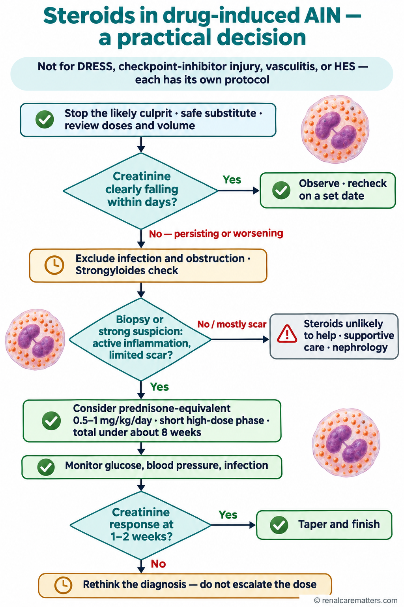
The steroid decision for drug-induced AIN only, with a built-in review date and a stop rule.
- AIN
- Acute interstitial nephritis
- DRESS
- Drug reaction with eosinophilia and systemic symptoms
- HES
- Hypereosinophilic syndrome
Do not read a falling eosinophil count as kidney recovery
Steroids will normalize the count within hours. Recovery is measured by creatinine, urine output, and the sediment. Track the AEC and kidney function as separate lines; if they diverge, revisit the cause and the biopsy decision.
Steroids bring the eosinophil count down within hours. Whether the kidney is recovering is a separate question, answered by creatinine, urine output, and the urine sediment.
The steroid regimen above applies to drug-induced AIN only. DRESS, ICI toxicity, vasculitis, and HES each have their own protocols, described next.
ICI kidney injury and DRESS
Immune checkpoint inhibitor–associated AKI
Observational In a 30-site, 10-country cohort of 429 patients with ICI-associated AKI, injury occurred at a median of 16 weeks after starting therapy. Lower baseline eGFR, PPI use, and extra-renal immune-related adverse events were associated with higher risk. Acute tubulointerstitial nephritis was the lesion in 83% of those biopsied. Two-thirds recovered. Corticosteroids within 14 days were associated with recovery (adjusted odds ratio 2.64), and starting within 3 days was better than later (adjusted odds ratio 2.09). Of 121 patients rechallenged, 16.5% had recurrent AKI, without a survival difference versus no rechallenge.23
Consensus The American Society of Onco-nephrology (ASON) position statement and the Society for Immunotherapy of Cancer (SITC) guideline both frame the decisions — holding the ICI, whether to biopsy, steroid timing, and rechallenge — as joint oncology–nephrology calls weighed against the cancer's response.2425 Address concurrent PPIs and NSAIDs first; they are both independent AIN culprits and ICI-AKI risk factors.
DRESS
DRESS is a delayed, T-cell–mediated drug hypersensitivity with herpesvirus reactivation. The kidney is the second most commonly involved solid organ after the liver. Use the European Registry of Severe Cutaneous Adverse Reactions (RegiSCAR) score together with the clinical picture and re-score over time, because eosinophilia and organ involvement can lag the rash.
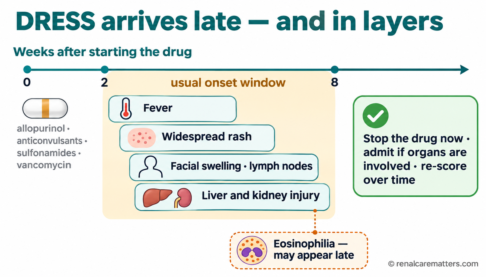
This drug reaction usually starts weeks after the medicine, builds in layers, and may show raised eosinophils only at the end.
- DRESS
- Drug reaction with eosinophilia and systemic symptoms
Consensus A 2024 Delphi consensus of 54 international experts agreed on 93 statements, grading severity (mild, moderate, severe) by the extent of liver, kidney, and blood involvement and other organ damage, and matching therapy to that grade — systemic glucocorticoids in severe disease, with monitoring for relapse during taper and for delayed autoimmune sequelae such as thyroid dysfunction.26 Assess for Stevens–Johnson syndrome and toxic epidermal necrolysis (SJS/TEN) when there is painful skin, blistering, or mucosal erosion.
Allopurinol and human leukocyte antigen (HLA)-B*58:01
Allopurinol is the commonest DRESS culprit in kidney practice, and risk rises with human leukocyte antigen (HLA)-B*58:01 carriage, which is more frequent in several Asian populations. The 2020 American College of Rheumatology (ACR) gout guideline conditionally recommends HLA-B*58:01 testing before allopurinol in patients of Southeast Asian descent and African American patients, and a low starting dose — lower still in CKD.27 Where testing is unavailable, start low, titrate slowly, and counsel the patient to stop the drug and seek care for rash or fever in the first months.
EGPA and hypereosinophilic syndromes
EGPA
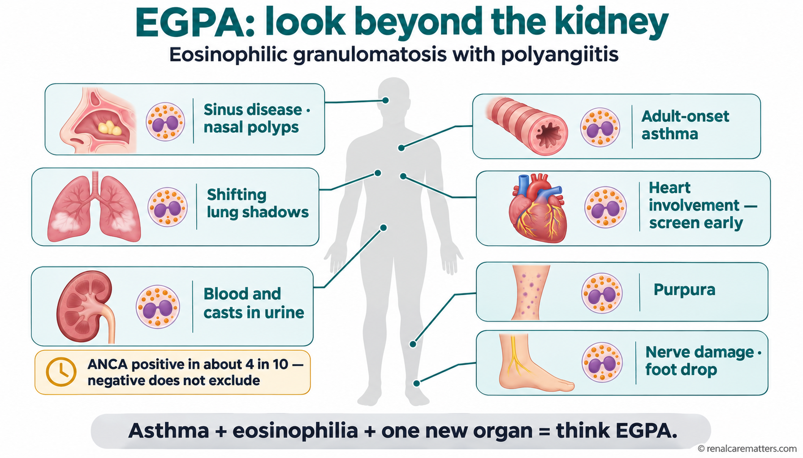
EGPA can touch the sinuses, airways, lungs, heart, skin, nerves, and kidneys. The clues are often outside the kidney, and a negative ANCA test does not rule it out.
- EGPA
- Eosinophilic granulomatosis with polyangiitis
- ANCA
- Antineutrophil cytoplasmic antibody
The 2022 ACR/European Alliance of Associations for Rheumatology (EULAR) classification criteria score a patient already diagnosed with small- or medium-vessel vasculitis, after mimics are excluded: maximum eosinophil count ≥1 × 10⁹/L (+5), obstructive airway disease (+3), nasal polyps (+3), extravascular eosinophil-predominant inflammation (+2), mononeuritis multiplex or motor neuropathy (+1), cytoplasmic or PR3-ANCA (−3), and hematuria (−1). A score ≥6 classifies EGPA with 85% sensitivity and 99% specificity.28 These are research classification criteria, not diagnostic criteria — and the negative weight for hematuria means a nephritic patient can score lower while having renal EGPA.
Observational Among 63 patients with biopsy-proven renal EGPA, 84% were ANCA-positive (mostly MPO), 75% presented with acute kidney failure, and 78% had pauci-immune necrotizing GN. ANCA-negative patients more often had atypical lesions such as membranous nephropathy, and 14% were on chronic dialysis at a median 51 months.9 ANCA negativity therefore does not exclude renal EGPA.
Guideline Organ-threatening EGPA — active GN, cardiac, neurologic, or gastrointestinal involvement — is induced with glucocorticoids plus cyclophosphamide or rituximab under urgent nephrology and rheumatology care.2930 The 2021 ACR/Vasculitis Foundation guideline issued conditional recommendations only, including mepolizumab for nonsevere EGPA.29 KDIGO's 2024 ANCA-associated vasculitis update focuses on granulomatosis with polyangiitis and microscopic polyangiitis (GPA/MPA) — lower-dose glucocorticoid induction and avacopan — so its protocols should not be transposed unchanged onto EGPA.31
Randomized MANDARA randomized 140 adults with relapsing or refractory EGPA to benralizumab or mepolizumab: remission at weeks 36 and 48 was 59% vs 56% (difference 3 percentage points; 95% CI −13 to 18), establishing noninferiority; complete oral glucocorticoid withdrawal was achieved in 41% vs 26%.32 The trial did not study new-onset, organ-threatening GN, so it does not support anti-IL-5 drugs as induction for active renal vasculitis.
Hypereosinophilic syndromes
Think in four bins: reactive (secondary), lymphocytic (an aberrant T-cell clone producing IL-5), myeloid or neoplastic (often a tyrosine kinase fusion), and idiopathic.2 The bin changes the drug.
- Imatinib is the targeted therapy for PDGFRA or PDGFRB rearrangements; responses can be dramatic at low doses.
- Randomized Mepolizumab 300 mg every 4 weeks for 32 weeks halved the proportion of patients with a flare in FIP1L1::PDGFRA-negative HES (28% vs 56%; 108 patients).33
- Randomized Benralizumab 30 mg every 4 weeks for 24 weeks reduced the risk of first flare in the NATRON phase 3 trial (133 patients; HR 0.35, 95% CI 0.18–0.69), with adverse events similar to placebo.34
Apply current labeling and local registration status; availability of anti-IL-5 biologics varies considerably by country. Organ-threatening HES may need urgent glucocorticoids while molecular results are pending — with parasite risk managed in parallel.
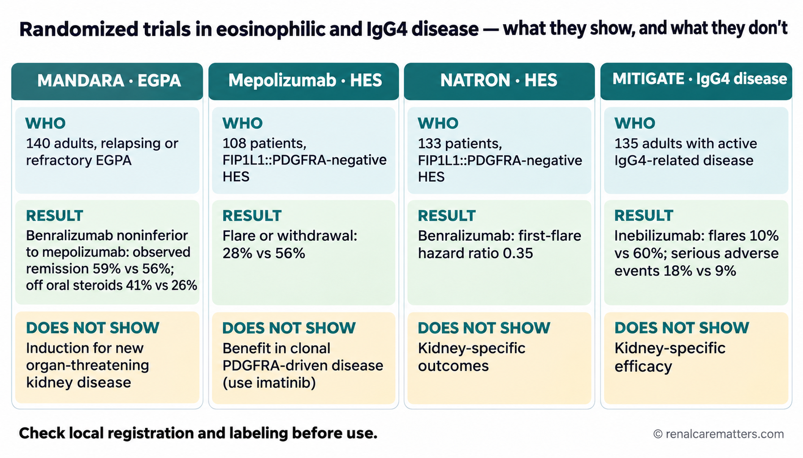
What each randomized trial showed, and the patients it does not speak to. None tested kidney-specific outcomes or induction for new, organ-threatening kidney disease.
- EGPA
- Eosinophilic granulomatosis with polyangiitis
- HES
- Hypereosinophilic syndrome
- IgG4-RD
- Immunoglobulin G4-related disease
Cholesterol emboli and IgG4-related kidney disease
Atheroembolic kidney disease
Observational In a multicenter cohort of 354 patients, atheroembolic renal disease was spontaneous in 23.5% and followed angiographic or surgical procedures in the rest; over about two years, 116 needed dialysis and 102 died. Statin use was associated with a 50% lower risk of dialysis and death.35 That statin association is observational and may reflect healthier treated patients, but statins are indicated for the underlying atherosclerosis regardless. Eosinophilia, when present, is often transient — another reason to retrieve the count from the days after the procedure. Contrast-associated AKI has an earlier course and can coexist. Steroid evidence is uncertain; anticoagulation should be reviewed individually with the treating team.
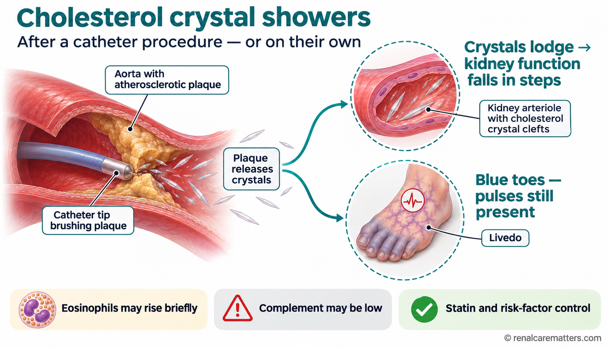
A procedure, or sometimes nothing at all, can break cholesterol crystals off a stiff aorta. They block small arteries in the kidneys and toes.
IgG4-related kidney disease
The Japanese Society of Nephrology criteria validated in 2021 (sensitivity 72.7%, specificity 90.0% for the 2011 version) led to a revised 2020 version that adds bilateral lacrimal, submandibular, or parotid swelling and characteristic imaging as supporting items — reflecting that many true cases lacked biopsy-proven extra-renal lesions.36 Serum IgG4 alone is insufficient for diagnosis. Membranous nephropathy can occur. Treatment is specialist-directed, usually glucocorticoids first.
Randomized In MITIGATE, the CD19-directed B-cell–depleting antibody inebilizumab reduced flares of IgG4-RD across organs over 52 weeks (10% vs 60%; HR 0.13) and increased glucocorticoid-free complete remission, with more serious adverse events (18% vs 9%).37 The trial addresses systemic flare prevention, not kidney-specific outcomes; check local approval before using it.
Dialysis and transplant: direct escalation routes
Hemodialysis circuit and infusion reactions
Ask first what changed: a new dialyzer membrane or brand, a different sterilization method (ethylene oxide, gamma irradiation, steam), new tubing, a change in disinfectant, or a new IV iron, antibiotic, or heparin product. The AN69 (acrylonitrile–sodium methallyl sulfonate copolymer) membrane combined with an ACE inhibitor is the classic bradykinin-mediated pairing. Urticaria, wheeze, angioedema, or hypotension within minutes of connection are urgent. Consider hemolysis, air embolism, pyrogenic reaction, sepsis, and cardiac events in parallel.1
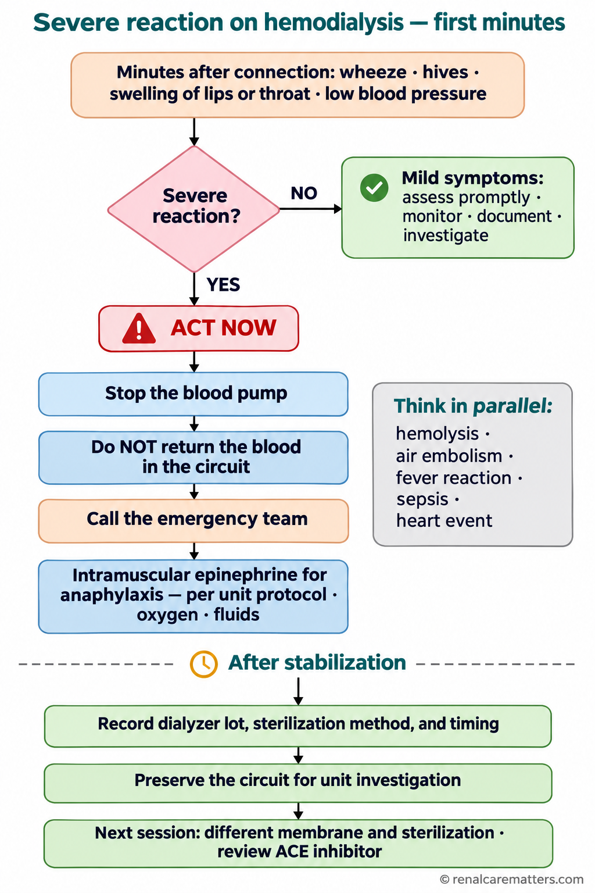
The first minutes of a severe reaction on dialysis: stop, do not give back the blood in the lines, call for help, and give epinephrine. Investigate the equipment afterward.
- ACE
- Angiotensin-converting enzyme
After stabilization, record lot numbers and timing, preserve the circuit for investigation under unit protocol, and set up a safe alternative (a different membrane and sterilization method) before re-exposure.
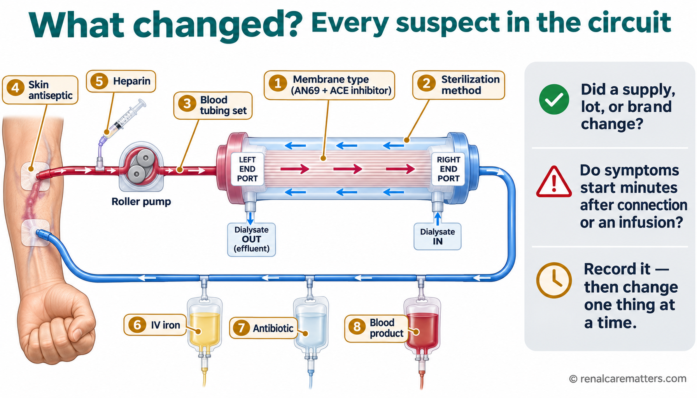
Every part of the dialysis setup that can trigger a reaction. When a reaction happens, ask what changed and record it.
- AN69
- Acrylonitrile–sodium methallyl sulfonate copolymer membrane
- ACE
- Angiotensin-converting enzyme
- IV
- Intravenous
For asymptomatic persistent eosinophilia on dialysis, the UK data show it is common (4.7%), usually subclinical sensitization to circuit components, and carries no excess mortality.7 Use a consistent pre-dialysis sampling time, review the supply and medication timeline, and still evaluate non-circuit causes — helminths, drugs, and atopy do not disappear because a patient dialyzes. See Volume, Blood Pressure & Hemodynamic Tolerance in Maintenance Hemodialysis for distinguishing reaction-related hypotension from volume-driven intradialytic hypotension.
Peritoneal dialysis (PD)
Eosinophilic peritonitis occurs, typically early after catheter insertion, but cloudy effluent is infectious peritonitis until proved otherwise — send cell count, Gram stain, and culture before attributing it to eosinophils.
Kidney allograft dysfunction
Contact the transplant team the same day. Assess volume, obstruction, vascular complications, calcineurin inhibitor levels, BK polyomavirus and other infections, drug-associated AIN, and rejection. Obtain ultrasound with Doppler, urinalysis and protein quantification, drug levels, and virologic and immunologic studies as indicated. Persistent unexplained creatinine rise generally needs a for-cause biopsy interpreted under current Banff criteria. Blood or tissue eosinophils alone neither diagnose rejection nor direct immunosuppression.
Observational Strongyloides is a specific transplant hazard. A review of 108 post-transplant episodes found peripheral eosinophilia in only 53% (41/77), hyperinfection in 90%, gram-negative bacteremia in half of those tested, 32 donor-derived cases (almost all donors from endemic areas), and all-cause mortality of 45%.38 Screen recipients — and, where feasible, donors — with epidemiologic risk regardless of the eosinophil count.
The steroid safety check — Strongyloides
Strongyloides stercoralis is unusual among helminths: it completes its life cycle inside the host (autoinfection), so a person can carry it silently for decades after leaving an endemic area. Glucocorticoids accelerate that cycle, and migrating larvae carry gut bacteria into the bloodstream. Hyperinfection can follow even a short steroid course, and eosinophilia is often absent once it starts — the host's type 2 response has been suppressed.3938
This parasite can live quietly in the gut for decades. Steroids speed up its cycle, and the larvae can carry gut bacteria into the blood, often while the eosinophil count looks normal.
| Situation | Centers for Disease Control and Prevention (CDC) regimen39 | Notes |
|---|---|---|
| Uncomplicated (chronic) infection | Ivermectin 200 µg/kg orally daily for 1–2 days | Alternative: albendazole 400 mg twice daily for 7 days. Caution with suspected Loa loa (relevant only with Central/West African travel), weight <15 kg, pregnancy, lactation |
| Hyperinfection / disseminated disease | Ivermectin 200 µg/kg orally daily until stool and/or sputum are negative for 2 weeks | Stop or reduce immunosuppression if possible; rectal or veterinary subcutaneous routes have been used when oral absorption fails |
Ivermectin needs no dose adjustment for kidney function. For any planned prolonged immunosuppression, specify regimen-dependent screening and prophylaxis with specialist and local protocol input: hepatitis B serology before B-cell depletion, latent TB assessment, and Pneumocystis prophylaxis when indicated.
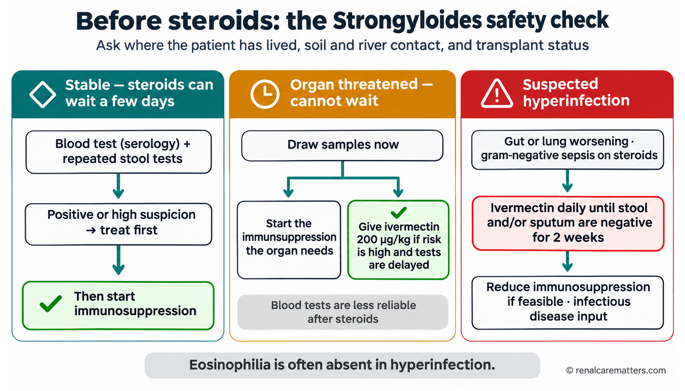
The parasite safety check before steroids: test first when the patient is stable, treat and test at the same time when an organ cannot wait, and treat urgently when hyperinfection is suspected.
- CDC
- Centers for Disease Control and Prevention
- GI
- Gastrointestinal
- ID
- Infectious disease
Philippine exposure and testing note
For a Filipino patient — or anyone who grew up in the rural Philippines — lifetime residence is the exposure history. Soil-transmitted helminths remain common: a 2012 survey of 6,976 people in 18 rural barangays in Northern Samar found Schistosoma japonicum in 28.9% and at least one helminth in 75.6%, with farming, fishing, poor sanitation, and proximity to water as reliable predictors.41 Local Strongyloides data are sparse and heterogeneous, which argues for asking about exposure rather than assuming either high or low risk.
Six questions that turn "exposure history" into answers a patient can give. Where a person grew up still matters decades later.
- Ask: province of childhood, farming or rice-field work, barefoot soil contact, swimming or bathing in rivers and lakes (schistosomiasis-endemic areas include parts of Samar, Leyte, Mindanao, and Mindoro), and any deworming history.
- Medicines: OTC omeprazole and NSAIDs such as mefenamic acid are widely available without prescription — ask specifically. Capture herbal products and supplements by photographing the label.
- Testing access: Strongyloides serology, agar plate culture, and molecular stool tests are not available in every facility; serial concentration stool examinations are a practical fallback. Where testing is delayed and immunosuppression is urgent, empiric ivermectin (pathway B) is the safer course.
- Biopsy and specialist access vary by region — document the reasoning when a decision is made without tissue, and set the reassessment date accordingly.
Three cases — action and reassessment
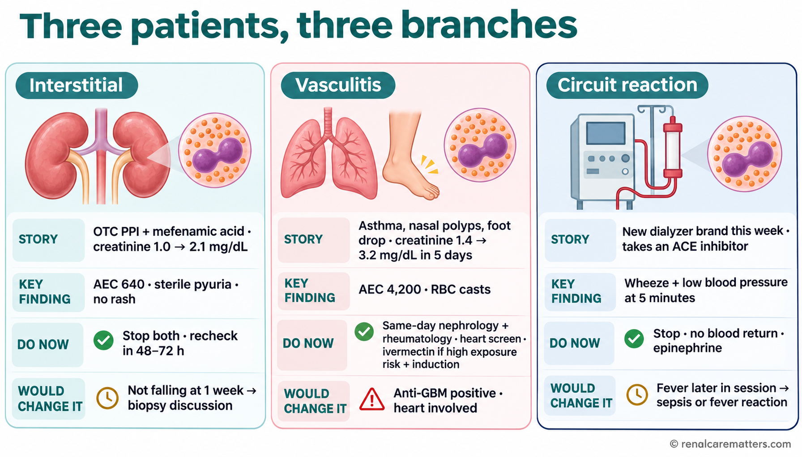
Three patients, three branches of the same pathway. Open each case below for the full reasoning.
- OTC
- Over-the-counter
- PPI
- Proton pump inhibitor
- AEC
- Absolute eosinophil count
- RBC
- Red blood cell
- GBM
- Glomerular basement membrane
- ACE
- Angiotensin-converting enzyme
Findings: creatinine 1.0 → 2.1 mg/dL over ten days, sterile pyuria, UPCR 0.6 g/g, no rash, no fever, normal ultrasound, no glomerular features.
Next action: stop the PPI and mefenamic acid (switch to an H₂-receptor antagonist and acetaminophen), document both as suspected culprits, and recheck creatinine in 48–72 hours. Book nephrology review and a biopsy discussion if creatinine has not clearly fallen within about a week.
What would change it: an RBC cast or dysmorphic red cells (glomerular branch, ANCA); creatinine still rising at one week (biopsy, then early steroids after a Strongyloides exposure check — she grew up on a farm in Leyte).
Findings: a 52-year-old with adult-onset asthma and nasal polyps, AEC 4,200 cells/µL, left foot drop, purpura, RBC casts, creatinine 1.4 → 3.2 mg/dL (124 → 283 µmol/L) in five days. Lived in Bicol until age 20.
Next action: same-day nephrology and rheumatology; ANCA, anti-GBM, complement; ECG, troponin, echocardiogram; urgent kidney biopsy if it will not delay treatment. Draw Strongyloides serology and stool, give empiric ivermectin, and start induction glucocorticoids with cyclophosphamide or rituximab — the kidney cannot wait for serology.
What would change it: a positive anti-GBM antibody (plasma exchange discussion); cardiac involvement on MRI (higher-intensity induction, cardiology co-management); ANCA-negative biopsy showing membranous nephropathy (a different treatment track).
Findings: five minutes after connection, a patient on maintenance HD develops wheeze, flushing, and a systolic pressure of 70 mmHg. The unit switched dialyzer brands that week; the patient takes an ACE inhibitor.
Next action: stop the pump, do not return the circuit blood, call the emergency team, give intramuscular epinephrine, oxygen, and fluids per protocol. Record dialyzer lot and sterilization method; preserve the circuit.
What would change it: fever and rigors an hour into the session (pyrogenic reaction or bacteremia — cultures, not antihistamines); hemolyzed blood in the lines (hemolysis — check dialysate temperature and composition). Before the next session: a different membrane and sterilization method, and review of the ACE inhibitor.
Follow-up card and bedside checklist
Who checks, and when: a named person and a date at every step, ending with a 3-month check for lasting kidney damage.
- eGFR
- Estimated glomerular filtration rate
- CKD
- Chronic kidney disease
Printable bedside checklist
☐ AEC and trend (pre-steroid value) · ☐ baseline and current creatinine, AKI stage · ☐ urine output · ☐ urine sediment read personally · ☐ UPCR/UACR · ☐ drug, procedure, and dialysis-circuit chronology · ☐ key extra-renal findings (skin, airways, nerves, heart, digits, eyes) · ☐ lifetime geographic exposure · ☐ Strongyloides plan before steroids · ☐ biopsy decision and reason · ☐ referral owner · ☐ next review date
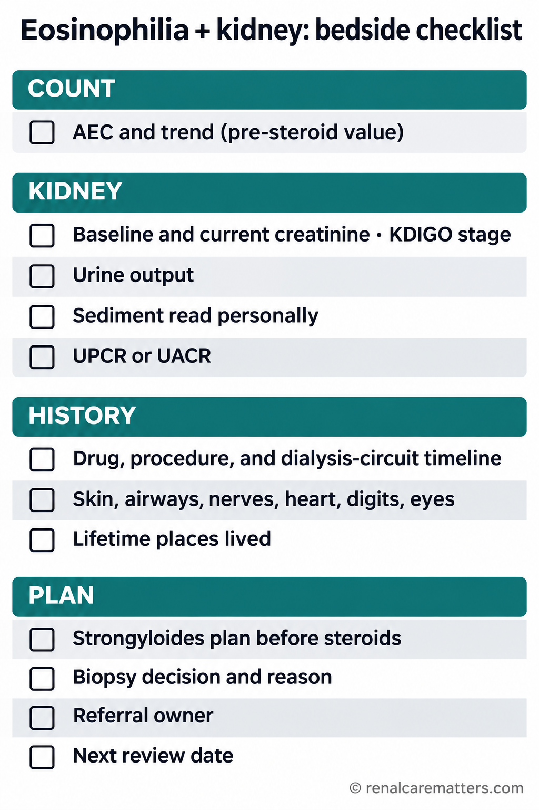
Save this checklist to your phone. Tap twice to open it full size.
- AEC
- Absolute eosinophil count
- KDIGO
- Kidney Disease: Improving Global Outcomes
- UPCR
- Urine protein-to-creatinine ratio
- UACR
- Urine albumin-to-creatinine ratio
For a structured approach to staging and recovery after the acute episode, see AKI Does Not End at Discharge and How to Properly Assess Your Kidney Function.
Objective tools that pair with this workup
There is deliberately no "eosinophilia–kidney probability score" here — no validated one exists. These calculators support the measurable steps.
Frequently asked
The takeaways
Calculate the absolute count and find the pre-steroid value. Let the sediment and the timeline — not the count — choose the branch. Stop likely culprits early, biopsy when it changes treatment, and keep steroid use for drug-induced AIN early and short. Run a Strongyloides check before every course of immunosuppression. Name an owner and a date for every reassessment.